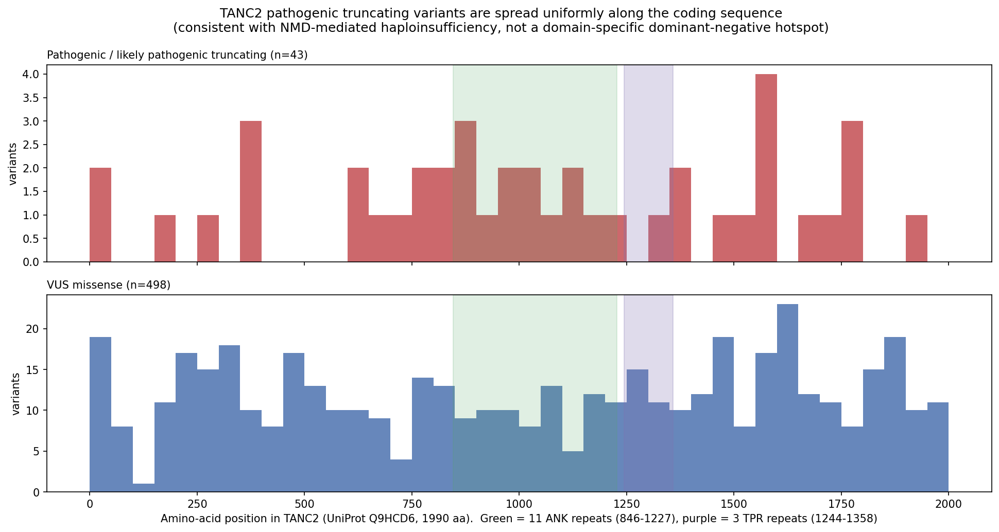
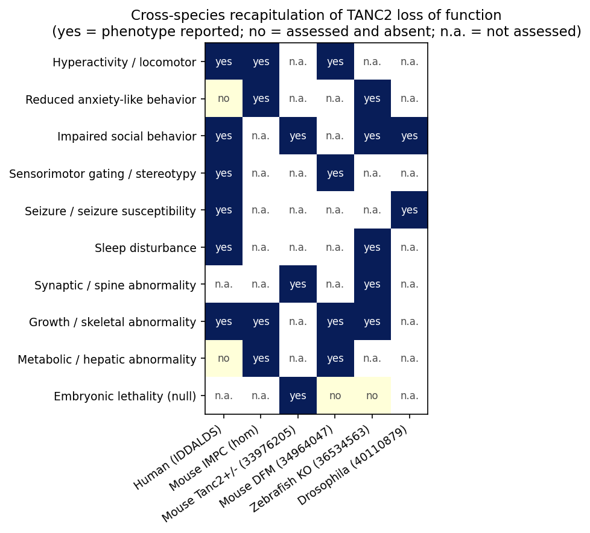
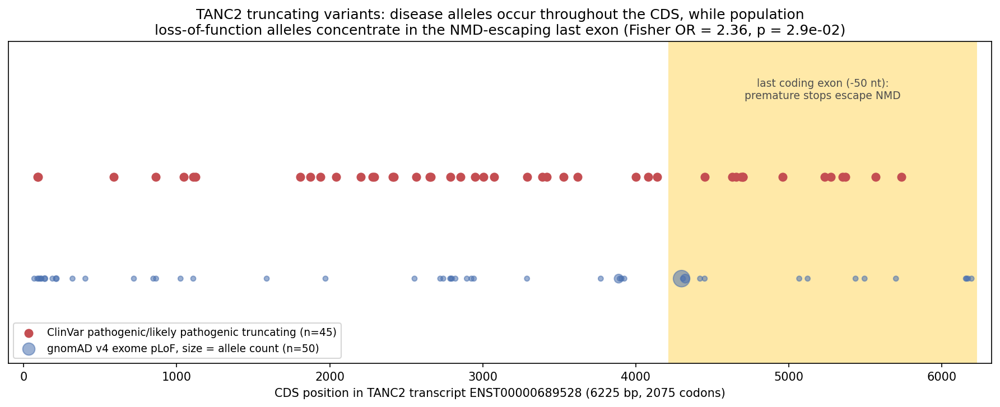
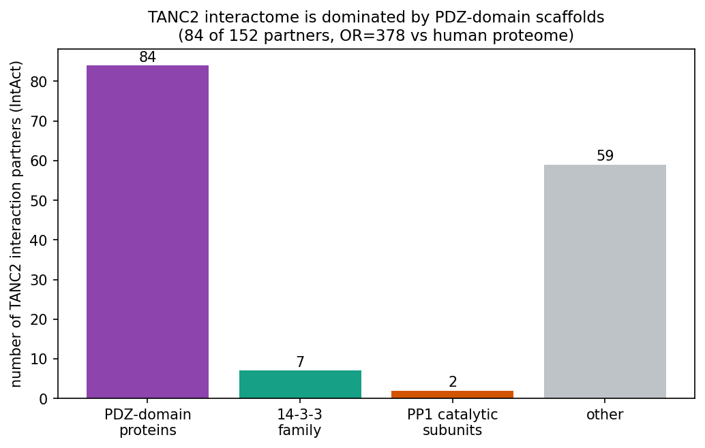

Intellectual Developmental Disorder With Autistic Features And Language Delay With Or Without Seizures
An autosomal dominant neurodevelopmental disorder (IDDALDS) caused by heterozygous loss-of-function variants in TANC2, which encodes a large postsynaptic density scaffolding protein. The clinical core is intellectual disability, delayed speech and language development and autistic behaviour, with epilepsy in about half of reported patients - which is what the "with or without seizures" clause in the disease name records. Adult probands and carrier parents more often show complex psychiatric or behavioural problems than the childhood presentation suggests. The mechanism is haploinsufficiency acting through mTOR. TANC2 binds mTOR directly and inhibits both mTORC1 and mTORC2; complete loss is embryonic lethal in mouse, while the haploinsufficient mouse survives and shows mTORC1/2 hyperactivity with synaptic and behavioural deficits that rapamycin reverses. Downstream, the zebrafish knockout selectively expands the glutamatergic neuron population while leaving GABAergic and glycinergic populations intact, which is an excitatory/inhibitory imbalance, and Drosophila knockdown has been reported to raise seizure susceptibility, though an earlier knockdown in the same organism found no seizure-like behaviour and the entry records both. TANC2 also recruits KIF1A-transported dense core vesicles to postsynaptic sites, a second synaptic function lost with the protein. Two things about the evidence base shape how this entry is written. The human arm rests almost entirely on a single 20-patient cohort, so every reported frequency has a denominator between 9 and 20; and the steps from excitatory/inhibitory imbalance to the cognitive, language and social phenotype are inferred from parallel animal behaviour rather than from human neurophysiology, so they are not drawn as causal edges.
Ask OpenScientist
Ask a research question about Intellectual Developmental Disorder With Autistic Features And Language Delay With Or Without Seizures. OpenScientist will conduct autonomous deep research using the Disorder Mechanisms Knowledge Base and PubMed literature (typically 10-30 minutes).
Do not include personal health information in your question. Questions and results are cached in your browser's local storage.
Inheritance
1Show evidence (2 references)
Discussions and Knowledge Gaps
3Show evidence (1 reference)
Show evidence (1 reference)
Show evidence (1 reference)
Pathophysiology
7Show evidence (2 references)
Show evidence (2 references)
Show evidence (1 reference)
Show evidence (1 reference)
Show evidence (1 reference)
Show evidence (2 references)
Show evidence (1 reference)
Pathograph
Phenotypes
16Digestive 1
Show evidence (1 reference)
Eye 1
Show evidence (1 reference)
Head and Neck 2
Show evidence (1 reference)
Show evidence (1 reference)
Limbs 1
Show evidence (1 reference)
Musculoskeletal 4
Show evidence (1 reference)
Show evidence (1 reference)
Show evidence (1 reference)
Show evidence (1 reference)
Nervous System 6
Show evidence (1 reference)
Show evidence (1 reference)
Show evidence (1 reference)
Show evidence (3 references)
Show evidence (1 reference)
Show evidence (1 reference)
Other 1
Show evidence (1 reference)
Genetic Associations
1Medical Actions
3Show evidence (1 reference)
Show evidence (1 reference)
Diagnosis
2Show evidence (1 reference)
Show evidence (1 reference)
Clinical Trials
1Animal Models
2Show evidence (1 reference)
Show evidence (1 reference)
Show evidence (1 reference)
Show evidence (1 reference)
Source YAML
click to showname: Intellectual Developmental Disorder With Autistic Features And Language Delay With Or Without Seizures
creation_date: "2026-11-20T14:20:00Z"
category: Mendelian
synonyms:
- IDDALDS
- TANC2-related neurodevelopmental disorder
- TANC2 haploinsufficiency
description: >-
An autosomal dominant neurodevelopmental disorder (IDDALDS) caused by
heterozygous loss-of-function variants in TANC2, which encodes a large
postsynaptic density scaffolding protein. The clinical core is intellectual
disability, delayed speech and language development and autistic behaviour,
with epilepsy in about half of reported patients - which is what the "with or
without seizures" clause in the disease name records. Adult probands and
carrier parents more often show complex psychiatric or behavioural problems
than the childhood presentation suggests.
The mechanism is haploinsufficiency acting through mTOR. TANC2 binds mTOR
directly and inhibits both mTORC1 and mTORC2; complete loss is embryonic
lethal in mouse, while the haploinsufficient mouse survives and shows
mTORC1/2 hyperactivity with synaptic and behavioural deficits that rapamycin
reverses. Downstream, the zebrafish knockout selectively expands the
glutamatergic neuron population while leaving GABAergic and glycinergic
populations intact, which is an excitatory/inhibitory imbalance, and
Drosophila knockdown has been reported to raise seizure susceptibility,
though an earlier knockdown in the same organism found no seizure-like
behaviour and the entry records both. TANC2 also recruits
KIF1A-transported dense core vesicles to postsynaptic sites, a second
synaptic function lost with the protein.
Two things about the evidence base shape how this entry is written. The human
arm rests almost entirely on a single 20-patient cohort, so every reported
frequency has a denominator between 9 and 20; and the steps from
excitatory/inhibitory imbalance to the cognitive, language and social
phenotype are inferred from parallel animal behaviour rather than from human
neurophysiology, so they are not drawn as causal edges.
notes: >-
Name. The entry keeps the MONDO and OMIM descriptive title rather than a
gene-related dyad, and the decision was made by checking rather than by
preference. The entry-naming skill's scope test is arguably failed by this
label, since a patient can have intellectual disability, autistic features
and language delay without a TANC2 variant. But rule 2 only allows a
`<GENE>-Related <Phenotype>` name where one is established, and none is:
MONDO:0030051's only exact synonyms are "IDDALDS" and casing variants of the
descriptive label (checked against OLS on 2026-11-20); there is no
GeneReviews chapter; ClinGen's own disease name for the pair is the
descriptive label; and OMIM 618906 carries it too. The primary literature
describes rather than names the entity - "Disruptive mutations in TANC2
define a neurodevelopmental syndrome associated with psychiatric disorders".
Rule 7 then applies: where nothing is established, keep a clear existing name
and do not coin a dyad. "TANC2-related neurodevelopmental disorder" is kept in
`synonyms` so the search works, but it is dismech's phrasing, not a
established name, and it is not used as the entry name.
No GeneReviews chapter. Checked offline against the committed Bookshelf index
(cache/bookshelf/genereviews.csv, snapshot 2026-09-10, 958 chapters) for
"TANC2", "autistic" and "language delay": no current or retired chapter
matches, and there is no gene-scoped TANC2 chapter. Phenotype content comes
from the primary cohort instead.
Frequencies are not recorded as prevalence figures. The cohort reports
intellectual disability in 19 of 20 patients, language delay in 18 of 20,
autistic behaviour in 15 of 20 and seizures in 11 of 20. Those are
proportions within one ascertained series, not population frequencies, and
all 19 HPO annotations for OMIM:618906 trace to that single cohort. They are
described in the phenotype rows rather than written into `prevalence`, which
would imply a population denominator this disease does not have.
Only one phenotype has an inbound causal edge, and adding the cohort features
made that ratio worse rather than better. Seizure is wired from the
excitatory-inhibitory imbalance. Nothing else is: the cohort counts ataxia,
strabismus, scoliosis, hypotonia, foot and chest deformities,
craniosynostosis, joint hypermobility and constipation without proposing a
mechanism for any of them, and the route from the imbalance to the cognitive,
language and social phenotype is inferred from animal behaviour rather than
measured in humans. Wiring those rows to the imbalance node would put an
inference in the graph that no cited source makes, which is worse than leaving
them unexplained. So this entry's phenotype connectivity is low by
construction, and it fell when the required rows were added - an entry that
records more of what was observed scores worse on that metric than one that
records less. The rows are still right to have: a reader looking for whether
scoliosis belongs to this syndrome should find the answer and its denominator.
The gene is grounded on a scaffold's molecular function, not an enzymatic one.
just check-gene-activity-grounding asks that a gene be grounded on the node it
lands on, and TANC2 has no catalytic activity to name. GO:0060090 molecular
adaptor activity is bound rather than a baseline exemption taken, because the
sources name the function in those words: PMID:33976205 calls Tanc2 "an
adaptor/scaffolding protein" and "a large (~200 kDa) multi-domain
adaptor/scaffolding protein". The postsynaptic specificity is in
preferred_term. GO:0140378 protein complex scaffold activity was the
alternative and was not chosen, because the adaptor wording is the one the
cited papers use.
Two reported features are deliberately absent. Sleep disturbance appears in
the cohort only as plus and minus marks in a per-patient table, with no prose
sentence stating a count, so there is nothing to quote; the deep-research
report's figure of 38% is its own reading of that table and is not used.
Stereotypies, altered gait and autonomic dysfunction are named in the cohort's
discussion without counts. Each would need a quotable sentence that gives a
numerator, and none exists in the cached text.
Terms not taken from the deep-research report. Its term validation recorded 8
of 84 checked labels as mismatched, and as with the FARIMPD report in this
same batch, every NCIT term it proposed was wrong: NCIT:C29236 offered as
"Oxcarbazepine" is Murine Monoclonal Antibody (LYM-1), NCIT:C938 as "Sodium
valproate" is Vitamin A Compound, NCIT:C28995 as "Felbamate monotherapy" is
Diphenoxylate Hydrochloride, NCIT:C94628 as "Ketogenic diet" is Third-Line
Therapy, NCIT:C15277 as "Behavioural intervention for autism" is Mastectomy,
NCIT:C15313 as "Constipation management" is Radiation Therapy, and NCIT:C15346
as "Occupational therapy" and "Physical therapy" is Vaccination - the same
wrong identifier the FARIMPD report offered for "Physical therapy". None was
used. Every CURIE here was read from the committed term caches or resolved
against OLS in the step it was written.
Deep-research provenance. The OpenScientist report contributed the gnomAD v4
constraint figures (26 observed loss-of-function alleles against 210.5
expected, o/e 0.124, LOEUF 0.17, pLI 1.00), the ClinVar allele breakdown, the
observation that 29% of pathogenic truncating alleles fall in the unusually
large last coding exon and so escape nonsense-mediated decay while deleting
the C-terminal class I PDZ-binding motif, and a penetrance argument from the
gap between a predicted de novo rate and the frequency of
decay-triggering alleles in gnomAD adults. Those are database-derived or
computed in the report rather than claims from a citable publication, and were
not independently re-derived in this session, so they are recorded here as
deep-research output and are not used as evidence items. The last-exon
argument is a genuinely interesting lead and is carried as a knowledge gap
rather than as a second mechanism branch, because no study has measured mTOR
activity in cells carrying such an allele.
disease_term:
preferred_term: intellectual developmental disorder with autistic features and language delay, with or without seizures
term:
id: MONDO:0030051
label: intellectual developmental disorder with autistic features and language delay, with or without seizures
parents:
- Neurodevelopmental Disorder
- Syndromic Intellectual Disability
references:
- reference: PMID:21068316
title: "Regulation of dendritic spines, spatial memory, and embryonic development by the TANC family of PSD-95-interacting proteins."
- reference: PMID:34861844
title: "Truncating mutation in TANC2 in a Chinese boy associated with Lennox-Gastaut syndrome: a case report."
inheritance:
- name: Autosomal dominant
inheritance_term:
preferred_term: Autosomal dominant inheritance
term:
id: HP:0000006
label: Autosomal dominant inheritance
description: >-
Heterozygous loss of function. Most reported variants arose de novo, but
some were inherited from an affected parent, and carrier parents may
themselves have psychiatric or behavioural problems rather than being
unaffected. Penetrance is not established.
evidence:
- reference: CGGV:assertion_b3d3d067-5a78-44b4-9c57-25cc784123bf-2026-06-22T100000.000Z
reference_title: "TANC2 / intellectual developmental disorder with autistic features and language delay, with or without seizures (Definitive)"
supports: SUPPORT
evidence_source: OTHER
snippet: "TANC2 | HGNC:30212 | intellectual developmental disorder with autistic features and language delay, with or without seizures | MONDO:0030051 | AD | Definitive"
explanation: >-
The ClinGen Intellectual Disability and Autism Gene Curation Expert Panel
records autosomal dominant inheritance for this gene-disease pair.
- reference: CGGV:assertion_b3d3d067-5a78-44b4-9c57-25cc784123bf-2026-06-22T100000.000Z
reference_title: "TANC2 / intellectual developmental disorder with autistic features and language delay, with or without seizures (Definitive)"
supports: SUPPORT
evidence_source: OTHER
snippet: >-
Most variants occurred de novo , but some individuals inherited the
variant from an affected parent.
explanation: >-
Records both the de novo majority and inherited transmission from an
affected parent. The spacing before the comma is the source's own.
pathophysiology:
- name: Heterozygous TANC2 Loss-of-Function Variant
biological_scale: MOLECULAR
node_class: PATHOGENIC_SEQUENCE_VARIANT
description: >-
One TANC2 allele lost to a frameshift, nonsense, canonical splice or
exon-deletion variant, or to a 17q23.3 copy-number deletion that removes the
gene. ClinGen's curation counts twenty-one such variants across twenty-two
probands.
genetic_context:
variant_origin: GERMLINE
functional_impact_category: LOSS_OF_FUNCTION
genes:
- preferred_term: TANC2
term:
id: hgnc:30212
label: TANC2
molecular_functions:
- preferred_term: postsynaptic scaffold and adaptor activity
modifier: LOSS_OF_FUNCTION
term:
id: GO:0060090
label: molecular adaptor activity
evidence:
- reference: CGGV:assertion_b3d3d067-5a78-44b4-9c57-25cc784123bf-2026-06-22T100000.000Z
reference_title: "TANC2 / intellectual developmental disorder with autistic features and language delay, with or without seizures (Definitive)"
supports: SUPPORT
evidence_source: OTHER
snippet: >-
Twenty-one loss-of-function variants (frameshift, nonsense, splice, and
exon deletion) that have been reported in 22 probands in 4 publications
explanation: >-
ClinGen's allele and proband census for this gene-disease pair.
- reference: PMID:33160097
reference_title: "17q23.3 de novo microdeletion involving only TANC2 gene: A new case."
supports: SUPPORT
evidence_source: HUMAN_CLINICAL
snippet: >-
Here, we describe a new case of TANC2 gene disruption in a 17q23.3 de novo
microdeletion identified by array-CGH.
explanation: >-
A whole-gene deletion case, which is what establishes that losing the gene
outright is sufficient rather than requiring a specific truncated product.
downstream:
- target: Reduced TANC2 Protein at the Postsynaptic Density
causal_link_type: INDIRECT_KNOWN_INTERMEDIATES
intermediate_mechanisms:
- Nonsense-mediated decay of the mutant transcript for premature stops outside the last coding exon
description: >-
Haploinsufficiency: one functional allele remains, and the mutant
transcript is largely degraded, so less TANC2 protein reaches the
postsynaptic density.
evidence:
- reference: CGGV:assertion_b3d3d067-5a78-44b4-9c57-25cc784123bf-2026-06-22T100000.000Z
reference_title: "TANC2 / intellectual developmental disorder with autistic features and language delay, with or without seizures (Definitive)"
supports: SUPPORT
evidence_source: OTHER
snippet: >-
The mechanism of pathogenicity is haploinsufficiency.
explanation: ClinGen states the mechanism directly.
- name: Reduced TANC2 Protein at the Postsynaptic Density
biological_scale: MOLECULAR
node_class: PROTEIN_ABUNDANCE_LOSS
description: >-
Less of the TANC2 scaffold at excitatory postsynaptic sites. TANC2 is a
large multi-domain adaptor expressed mainly in brain, present at synaptic
and non-synaptic sites, and interacting directly with PSD-95.
cellular_components:
- preferred_term: postsynaptic density
term:
id: GO:0014069
label: postsynaptic density
cell_types:
- preferred_term: glutamatergic neuron
term:
id: CL:0000679
label: glutamatergic neuron
evidence:
- reference: PMID:31616000
reference_title: Disruptive mutations in TANC2 define a neurodevelopmental syndrome associated with psychiatric disorders.
supports: SUPPORT
evidence_source: HUMAN_CLINICAL
snippet: >-
we report genetic and clinical data for 20 individuals with disruptive
mutations in TANC2, a gene encoding a synaptic scaffold protein
interacting with multiple ASD and other neuropsychiatric disorder-related
postsynaptic density (PSD) proteins in dendrites
explanation: >-
Identifies TANC2 as a postsynaptic density scaffold and names the
interaction partners the node depends on.
- reference: PMID:33976205
reference_title: Tanc2-mediated mTOR inhibition balances mTORC1/2 signaling in the developing mouse brain and human neurons.
supports: SUPPORT
evidence_source: MODEL_ORGANISM
quote_role: BACKGROUND
snippet: >-
Synaptic Tanc2 directly interacts with PSD-95
explanation: >-
States the PSD-95 interaction that places the protein at the postsynaptic
density. Quoted from the paper's introduction, where it restates earlier
work rather than a result of this study.
downstream:
- target: Loss of Direct mTOR Inhibition
causal_link_type: DIRECT
description: >-
TANC2 binds mTOR and inhibits it, so less TANC2 means less inhibition.
evidence:
- reference: PMID:33976205
reference_title: Tanc2-mediated mTOR inhibition balances mTORC1/2 signaling in the developing mouse brain and human neurons.
supports: SUPPORT
evidence_source: MODEL_ORGANISM
snippet: >-
Here, we show a direct, regulated inhibition of mTOR by Tanc2, an
adaptor/scaffolding protein with strong neurodevelopmental and
psychiatric implications.
explanation: >-
Establishes the direct inhibition that this edge removes.
- target: Loss of KIF1A Dense Core Vesicle Capture at Spines
causal_link_type: DIRECT
description: >-
TANC2, with liprin-alpha, recruits KIF1A-transported dense core vesicles
to postsynaptic sites; losing the scaffold removes that capture.
evidence:
- reference: PMID:30021165
reference_title: "Regulation of KIF1A-Driven Dense Core Vesicle Transport: Ca(2+)/CaM Controls DCV Binding and Liprin-α/TANC2 Recruits DCVs to Postsynaptic Sites."
supports: SUPPORT
evidence_source: IN_VITRO
snippet: >-
In contrast, liprin-α and TANC2 are not part of the KIF1A-cargo complex
but capture DCVs at dendritic spines.
explanation: >-
Establishes the capture function that is lost, and places it at the
spine rather than on the cargo.
- name: Loss of Direct mTOR Inhibition
biological_scale: MOLECULAR
node_class: SIGNALLING_INCREASED
description: >-
The TANC2 brake on mTOR is released. TANC2 inhibits both mTORC1 and mTORC2,
in mouse brain and in human neural progenitor cells and neurons, so the loss
is not a mouse-only phenomenon.
biological_processes:
- preferred_term: negative regulation of TOR signaling
modifier: DECREASED
term:
id: GO:0032007
label: negative regulation of TOR signaling
evidence:
- reference: PMID:33976205
reference_title: Tanc2-mediated mTOR inhibition balances mTORC1/2 signaling in the developing mouse brain and human neurons.
supports: SUPPORT
evidence_source: IN_VITRO
snippet: >-
Lastly, Tanc2 inhibits mTORC1/2 in human neural progenitor cells and
neurons.
explanation: >-
Establishes the inhibition in human cells, which is what makes the mouse
result translatable.
downstream:
- target: mTORC1 and mTORC2 Hyperactivity
causal_link_type: DIRECT
description: >-
With the brake gone, both complexes are hyperactive in the
haploinsufficient animal.
evidence:
- reference: PMID:33976205
reference_title: Tanc2-mediated mTOR inhibition balances mTORC1/2 signaling in the developing mouse brain and human neurons.
supports: SUPPORT
evidence_source: MODEL_ORGANISM
snippet: >-
While Tanc2-null mice show embryonic lethality, Tanc2-haploinsufficient
mice survive but display mTORC1/2 hyperactivity accompanying synaptic
and behavioral deficits reversed by mTOR-inhibiting rapamycin.
explanation: >-
Demonstrates the hyperactivity in the genotype that matches the human
disease, and its reversal by rapamycin.
- name: mTORC1 and mTORC2 Hyperactivity
biological_scale: MOLECULAR
node_class: SIGNALLING_INCREASED
description: >-
Both mTOR complexes run above their normal level in the haploinsufficient
brain. This is the node a therapy would target, and the one rapamycin acts
on in the mouse.
biological_processes:
- preferred_term: TORC1 signaling
modifier: INCREASED
term:
id: GO:0038202
label: TORC1 signaling
- preferred_term: TORC2 signaling
modifier: INCREASED
term:
id: GO:0038203
label: TORC2 signaling
evidence:
- reference: PMID:33976205
reference_title: Tanc2-mediated mTOR inhibition balances mTORC1/2 signaling in the developing mouse brain and human neurons.
supports: SUPPORT
evidence_source: MODEL_ORGANISM
snippet: >-
Tanc2-haploinsufficient mice survive but display mTORC1/2 hyperactivity
accompanying synaptic and behavioral deficits reversed by
mTOR-inhibiting rapamycin
explanation: Demonstrates the hyperactivity and its reversibility.
downstream:
- target: Altered Dendritic Spine and Excitatory Synapse Development
causal_link_type: DIRECT
description: >-
Synaptic deficits accompany the hyperactivity and are reversed with it.
evidence:
- reference: PMID:33976205
reference_title: Tanc2-mediated mTOR inhibition balances mTORC1/2 signaling in the developing mouse brain and human neurons.
supports: SUPPORT
evidence_source: MODEL_ORGANISM
snippet: >-
mTORC1/2 hyperactivity accompanying synaptic and behavioral deficits
reversed by mTOR-inhibiting rapamycin
explanation: >-
Links the synaptic deficits to the hyperactivity by their shared
reversal, which is the strongest form the cited evidence takes.
- name: Altered Dendritic Spine and Excitatory Synapse Development
biological_scale: CELLULAR
node_class: MORPHOGENESIS_MIGRATION_AND_POSITIONING
description: >-
Dendritic spine and excitatory synapse development is disturbed. The TANC
family's PDZ-binding C terminus is required for these proteins to increase
spine and synapse density, so both the reduced-protein route and the
motif-deleting route converge here. The direction of the change in patients
is deliberately not asserted: what has been measured is that
overexpression of TANC1 or TANC2 increases spine and synapse density in
cultured neurons and that the effect requires the PDZ-binding C terminus,
while the haploinsufficient mouse is reported only as having unspecified
synaptic deficits.
biological_processes:
- preferred_term: dendritic spine development
term:
id: GO:0060996
label: dendritic spine development
- preferred_term: synapse organization
term:
id: GO:0050808
label: synapse organization
cell_types:
- preferred_term: glutamatergic neuron
term:
id: CL:0000679
label: glutamatergic neuron
notes: >-
No modifier is set on either process. DECREASED was recorded in an earlier
draft and had no source: PMID:33976205 reports unspecified "synaptic
deficits" and its cached text never describes a spine phenotype, and the
only measured direction in the literature read here is an increase on
overexpression, which is the opposite manipulation from the disease. The
node therefore asserts that spine and synapse development is disturbed
without asserting which way.
evidence:
- reference: PMID:21068316
reference_title: "Regulation of dendritic spines, spatial memory, and embryonic development by the TANC family of PSD-95-interacting proteins."
supports: SUPPORT
evidence_source: IN_VITRO
snippet: >-
Overexpression of TANC1 and TANC2 in cultured neurons increases the
density of dendritic spines and excitatory synapses in a manner that
requires the PDZ (PSD-95/Dlg/ZO-1)-binding C termini of TANC proteins.
explanation: >-
Establishes that TANC2 acts on spine and excitatory synapse density and
that the PDZ-binding C terminus is required for it, which is what makes
the motif-deleting alleles relevant to this node. Measured on
overexpression, so it fixes the dependency rather than the direction in
haploinsufficiency.
downstream:
- target: Glutamatergic Expansion and Excitatory-Inhibitory Imbalance
causal_link_type: INDIRECT_UNKNOWN_INTERMEDIATES
description: >-
The zebrafish knockout expands the glutamatergic population selectively.
The step from altered spine and synapse development to a change in
population size is not established, and the intermediates are not known.
evidence:
- reference: PMID:36534563
reference_title: Knockout of tanc2 causes autism-like behavior and sleep disturbance in zebrafish.
supports: SUPPORT
evidence_source: MODEL_ORGANISM
directness: INDIRECT
snippet: >-
We observed that the glutamatergic neuron population is significantly
increased in tanc2 mutants while the GABAergic and the glycinergic
neurons are not affected, suggesting that an excitatory/inhibitory (E/I)
imbalance.
explanation: >-
Demonstrates the selective expansion in a complete knockout. The route
from the spine phenotype to it is inferred, so the edge is graded
indirect with unknown intermediates.
- name: Glutamatergic Expansion and Excitatory-Inhibitory Imbalance
biological_scale: TISSUE
node_class: NEURAL_CIRCUIT_AND_NETWORK_DYSFUNCTION
description: >-
More glutamatergic neurons with GABAergic and glycinergic populations
unchanged, shifting the balance of the circuit toward excitation. Shown in
the zebrafish knockout, which is a complete loss rather than the human
heterozygous state.
cell_types:
- preferred_term: glutamatergic neuron
term:
id: CL:0000679
label: glutamatergic neuron
- preferred_term: GABAergic neuron
term:
id: CL:0000617
label: GABAergic neuron
evidence:
- reference: PMID:36534563
reference_title: Knockout of tanc2 causes autism-like behavior and sleep disturbance in zebrafish.
supports: SUPPORT
evidence_source: MODEL_ORGANISM
snippet: >-
We observed that the glutamatergic neuron population is significantly
increased in tanc2 mutants while the GABAergic and the glycinergic
neurons are not affected, suggesting that an excitatory/inhibitory (E/I)
imbalance.
explanation: >-
The selective expansion that defines this node, rather than only the
proliferative change beneath it.
- reference: PMID:36534563
reference_title: Knockout of tanc2 causes autism-like behavior and sleep disturbance in zebrafish.
supports: SUPPORT
evidence_source: MODEL_ORGANISM
snippet: >-
Loss of tanc2 increases the larval brain size and body length by promoting
proliferation and inhibiting apoptosis.
explanation: >-
The proliferative change that underlies the population expansion in this
model.
downstream:
- target: Seizure
causal_link_type: INDIRECT_KNOWN_INTERMEDIATES
intermediate_mechanisms:
- Increased network excitability from the shifted excitatory-inhibitory balance
description: >-
Raised seizure susceptibility, reported after TANC2 knockdown in
Drosophila and manifesting clinically as epilepsy in about half of
reported patients. The fly result is contradicted by an earlier knockdown
in the same organism, so this edge carries both.
evidence:
- reference: PMID:40110879
reference_title: De novo TANC2 variants caused developmental and epileptic encephalopathy and epilepsy.
supports: SUPPORT
evidence_source: MODEL_ORGANISM
directness: INDIRECT
snippet: >-
Functional studies in Drosophila suggested that knockdown TANC2 led to
increased susceptibility to seizure-like behavior.
explanation: >-
The only experimental support for raised seizure susceptibility on loss
of the gene. Graded INDIRECT because the fly work tests susceptibility,
not the excitatory-inhibitory mechanism this edge runs through.
- reference: PMID:31616000
reference_title: Disruptive mutations in TANC2 define a neurodevelopmental syndrome associated with psychiatric disorders.
supports: REFUTE
evidence_source: MODEL_ORGANISM
snippet: >-
We did not detect any climbing or stress-induced seizure-like behavior
with glial or neuronal knockdown
explanation: >-
An earlier Drosophila knockdown of the TANC2 homologue found no
seizure-like behaviour, which contradicts the result above. Recorded so
the fly evidence is not presented as settled.
- reference: CGGV:assertion_b3d3d067-5a78-44b4-9c57-25cc784123bf-2026-06-22T100000.000Z
reference_title: "TANC2 / intellectual developmental disorder with autistic features and language delay, with or without seizures (Definitive)"
supports: SUPPORT
evidence_source: OTHER
snippet: >-
Pediatric patients present with delayed language and motor development,
intellectual disability, autism, and variable epilepsy and facial
dysmorphic features.
explanation: >-
Records epilepsy as a variable feature of the clinical picture, which is
the human end of this edge.
- name: Loss of KIF1A Dense Core Vesicle Capture at Spines
biological_scale: CELLULAR
node_class: PROTEIN_TRAFFICKING_AND_LOCALIZATION
description: >-
Dense core vesicles carried by the KIF1A motor are no longer captured at
postsynaptic sites. A second synaptic function of TANC2, parallel to the
mTOR brake, and one that specific patient mutations abolish.
cellular_components:
- preferred_term: postsynaptic density
term:
id: GO:0014069
label: postsynaptic density
evidence:
- reference: PMID:30021165
reference_title: "Regulation of KIF1A-Driven Dense Core Vesicle Transport: Ca(2+)/CaM Controls DCV Binding and Liprin-α/TANC2 Recruits DCVs to Postsynaptic Sites."
supports: SUPPORT
evidence_source: IN_VITRO
snippet: >-
Furthermore, we found that specific TANC2 mutations-reported in patients
with different neuropsychiatric disorders-abolish the interaction with
KIF1A.
explanation: >-
The strongest form of this claim: patient-derived TANC2 mutations abolish
the KIF1A interaction, which ties the capture defect to the disease rather
than leaving it a property of the wild-type protein.
notes: >-
No causal edge leaves this node. The function is established and its loss
follows from losing the scaffold, but nothing in the sources read connects
it to a specific clinical feature of this disorder, so it is left as a
terminal mechanistic branch rather than wired to a phenotype on inference.
phenotypes:
- name: Intellectual disability
category: Neurological
description: >-
Intellectual disability of variable degree, the commonest feature: 19 of the
20 patients in the defining cohort.
phenotype_term:
preferred_term: Intellectual disability
term:
id: HP:0001249
label: Intellectual disability
evidence:
- reference: PMID:31616000
reference_title: Disruptive mutations in TANC2 define a neurodevelopmental syndrome associated with psychiatric disorders.
supports: SUPPORT
evidence_source: HUMAN_CLINICAL
snippet: >-
Pediatric patients with disruptive mutations present with autism,
intellectual disability, and delayed language and motor development.
explanation: >-
The cohort's summary of the paediatric presentation, which names
intellectual disability as a core feature.
- name: Delayed speech and language development
category: Neurological
description: >-
Delayed speech and language development, reported in 18 of 20 patients and
named in the disease title.
phenotype_term:
preferred_term: Delayed speech and language development
term:
id: HP:0000750
label: Delayed speech and language development
evidence:
- reference: PMID:31616000
reference_title: Disruptive mutations in TANC2 define a neurodevelopmental syndrome associated with psychiatric disorders.
supports: SUPPORT
evidence_source: HUMAN_CLINICAL
snippet: >-
delayed language and motor development
explanation: Records the language delay in the cohort.
- name: Autistic behavior
category: Behavioral
description: >-
Autistic features, reported in 15 of 20 patients. The cohort was reached
partly by prioritising autism candidate genes, so ascertainment favours this
feature.
phenotype_term:
preferred_term: Autistic behavior
term:
id: HP:0000729
label: Autistic behavior
evidence:
- reference: PMID:31616000
reference_title: Disruptive mutations in TANC2 define a neurodevelopmental syndrome associated with psychiatric disorders.
supports: SUPPORT
evidence_source: HUMAN_CLINICAL
snippet: >-
Pediatric patients with disruptive mutations present with autism,
intellectual disability, and delayed language and motor development.
explanation: Records autism in the cohort's paediatric presentation.
- name: Seizure
category: Neurological
description: >-
Epilepsy in about half of reported patients, 11 of 20 in the defining
cohort, which is what the "with or without seizures" clause of the disease
name records. One subsequent case report describes Lennox-Gastaut syndrome
with a de novo nonsense variant, which the authors present as a phenotypic
extension rather than a typical presentation.
phenotype_term:
preferred_term: Seizure
term:
id: HP:0001250
label: Seizure
evidence:
- reference: PMID:31616000
reference_title: Disruptive mutations in TANC2 define a neurodevelopmental syndrome associated with psychiatric disorders.
supports: SUPPORT
evidence_source: HUMAN_CLINICAL
snippet: >-
In addition to a variable degree of epilepsy and facial dysmorphism
explanation: Records epilepsy as a variable feature of the cohort.
- reference: PMID:34861844
reference_title: "Truncating mutation in TANC2 in a Chinese boy associated with Lennox-Gastaut syndrome: a case report."
supports: SUPPORT
evidence_source: HUMAN_CLINICAL
snippet: >-
We described the first Chinese case with LGS associated to a de novo
nonsense mutation c.4321C > T(p.Gln1441Ter) in TANC2 gene, which would
expand the clinical spectrum related to TANC2 mutations
explanation: >-
A single case extending the seizure phenotype to Lennox-Gastaut syndrome,
recorded as the authors present it - an expansion of the spectrum.
- reference: PMID:40110879
reference_title: De novo TANC2 variants caused developmental and epileptic encephalopathy and epilepsy.
supports: SUPPORT
evidence_source: HUMAN_CLINICAL
snippet: >-
Patients with null variants exhibited severe phenotypes, including three
with epilepsy and neurodevelopmental disorders (NDDs) and one with
developmental and epileptic encephalopathy (DEE). In contrast, the
patients with missense variants presented with only epilepsy.
explanation: >-
A genotype-phenotype split along the axis the disease name records: null
variants give the severe neurodevelopmental presentations including
developmental and epileptic encephalopathy, while the missense carriers in
this series had epilepsy without the neurodevelopmental picture.
- name: Motor delay
category: Neurological
description: Delayed motor development, reported alongside the language delay.
phenotype_term:
preferred_term: Motor delay
term:
id: HP:0001270
label: Motor delay
evidence:
- reference: PMID:31616000
reference_title: Disruptive mutations in TANC2 define a neurodevelopmental syndrome associated with psychiatric disorders.
supports: SUPPORT
evidence_source: HUMAN_CLINICAL
snippet: >-
delayed language and motor development
explanation: Records the motor delay in the cohort.
- name: Abnormal facial shape
category: Craniofacial
description: >-
Facial dysmorphism of variable degree. No consistent gestalt is described
for the disorder.
phenotype_term:
preferred_term: Facial dysmorphism
term:
id: HP:0001999
label: Abnormal facial shape
coarse_binding_basis: SOURCE_UNSPECIFIED
notes: >-
HP:0001999 is a coarse binding, and the basis is SOURCE_UNSPECIFIED: the
cohort records "facial dysmorphism" as variable without itemising features,
and a later single case reports "no obvious craniofacial dysmorphisms", so
there is no narrower HPO term the sources support.
evidence:
- reference: PMID:31616000
reference_title: Disruptive mutations in TANC2 define a neurodevelopmental syndrome associated with psychiatric disorders.
supports: SUPPORT
evidence_source: HUMAN_CLINICAL
snippet: >-
In addition to a variable degree of epilepsy and facial dysmorphism
explanation: Records facial dysmorphism as variable in the cohort.
- name: Ataxia
category: Neurological
description: >-
Ataxia or spastic ataxia in 5 of the 20 patients in the defining cohort.
phenotype_term:
preferred_term: Ataxia or spastic ataxia
term:
id: HP:0001251
label: Ataxia
evidence:
- reference: PMID:31616000
reference_title: Disruptive mutations in TANC2 define a neurodevelopmental syndrome associated with psychiatric disorders.
supports: SUPPORT
evidence_source: HUMAN_CLINICAL
snippet: >-
Ataxia or spastic ataxia symptoms, for example, were observed in five
patients; strabismus in five; progressive scoliosis or hyperkyphosis in
five; foot deformities (club foot, flat valgus foot, talus valgus,
inversion in ankles) in four; craniosynostosis (brachycephaly,
turricephaly) in three; hypotonia in four; hypermobile joints in three;
and chest deformities (pectus excavatum, pectus carinatum) in three
explanation: >-
The cohort's count for this feature, in the sentence that reports all of
them together.
- name: Strabismus
category: Ophthalmologic
description: >-
Strabismus in 5 of 20 patients.
phenotype_term:
preferred_term: Strabismus
term:
id: HP:0000486
label: Strabismus
evidence:
- reference: PMID:31616000
reference_title: Disruptive mutations in TANC2 define a neurodevelopmental syndrome associated with psychiatric disorders.
supports: SUPPORT
evidence_source: HUMAN_CLINICAL
snippet: >-
Ataxia or spastic ataxia symptoms, for example, were observed in five
patients; strabismus in five; progressive scoliosis or hyperkyphosis in
five; foot deformities (club foot, flat valgus foot, talus valgus,
inversion in ankles) in four; craniosynostosis (brachycephaly,
turricephaly) in three; hypotonia in four; hypermobile joints in three;
and chest deformities (pectus excavatum, pectus carinatum) in three
explanation: >-
The cohort's count for this feature, in the sentence that reports all of
them together.
- name: Scoliosis
category: Skeletal
description: >-
Progressive scoliosis or hyperkyphosis in 5 of 20 patients.
phenotype_term:
preferred_term: Progressive scoliosis or hyperkyphosis
term:
id: HP:0002650
label: Scoliosis
notes: >-
The source counts scoliosis and hyperkyphosis together, so one row carries the count. HP:0002650 Scoliosis is bound and the kyphotic alternative is in preferred_term; HP:0002808 Kyphosis exists and was not bound separately because the count cannot be split.
evidence:
- reference: PMID:31616000
reference_title: Disruptive mutations in TANC2 define a neurodevelopmental syndrome associated with psychiatric disorders.
supports: SUPPORT
evidence_source: HUMAN_CLINICAL
snippet: >-
Ataxia or spastic ataxia symptoms, for example, were observed in five
patients; strabismus in five; progressive scoliosis or hyperkyphosis in
five; foot deformities (club foot, flat valgus foot, talus valgus,
inversion in ankles) in four; craniosynostosis (brachycephaly,
turricephaly) in three; hypotonia in four; hypermobile joints in three;
and chest deformities (pectus excavatum, pectus carinatum) in three
explanation: >-
The cohort's count for this feature, in the sentence that reports all of
them together.
- name: Hypotonia
category: Neurological
description: >-
Hypotonia in 4 of 20 patients.
phenotype_term:
preferred_term: Hypotonia
term:
id: HP:0001252
label: Hypotonia
notes: >-
Bound to HP:0001252 Hypotonia rather than HP:0001290 Generalized hypotonia, because the source says only "hypotonia" without stating a distribution.
evidence:
- reference: PMID:31616000
reference_title: Disruptive mutations in TANC2 define a neurodevelopmental syndrome associated with psychiatric disorders.
supports: SUPPORT
evidence_source: HUMAN_CLINICAL
snippet: >-
Ataxia or spastic ataxia symptoms, for example, were observed in five
patients; strabismus in five; progressive scoliosis or hyperkyphosis in
five; foot deformities (club foot, flat valgus foot, talus valgus,
inversion in ankles) in four; craniosynostosis (brachycephaly,
turricephaly) in three; hypotonia in four; hypermobile joints in three;
and chest deformities (pectus excavatum, pectus carinatum) in three
explanation: >-
The cohort's count for this feature, in the sentence that reports all of
them together.
- name: Abnormal foot morphology
category: Skeletal
description: >-
Foot deformities in 4 of 20 patients.
phenotype_term:
preferred_term: Foot deformities (club foot, flat valgus foot, talus valgus, ankle inversion)
term:
id: HP:0001760
label: Abnormal foot morphology
notes: >-
The source counts four different foot deformities under one total, so no single specific term can carry it. HP:0001760 Abnormal foot morphology is the nearest accurate parent and the individual deformities are listed in preferred_term.
evidence:
- reference: PMID:31616000
reference_title: Disruptive mutations in TANC2 define a neurodevelopmental syndrome associated with psychiatric disorders.
supports: SUPPORT
evidence_source: HUMAN_CLINICAL
snippet: >-
Ataxia or spastic ataxia symptoms, for example, were observed in five
patients; strabismus in five; progressive scoliosis or hyperkyphosis in
five; foot deformities (club foot, flat valgus foot, talus valgus,
inversion in ankles) in four; craniosynostosis (brachycephaly,
turricephaly) in three; hypotonia in four; hypermobile joints in three;
and chest deformities (pectus excavatum, pectus carinatum) in three
explanation: >-
The cohort's count for this feature, in the sentence that reports all of
them together.
- name: Craniosynostosis
category: Craniofacial
description: >-
Craniosynostosis in 3 of 20 patients.
phenotype_term:
preferred_term: Craniosynostosis (brachycephaly, turricephaly)
term:
id: HP:0001363
label: Craniosynostosis
evidence:
- reference: PMID:31616000
reference_title: Disruptive mutations in TANC2 define a neurodevelopmental syndrome associated with psychiatric disorders.
supports: SUPPORT
evidence_source: HUMAN_CLINICAL
snippet: >-
Ataxia or spastic ataxia symptoms, for example, were observed in five
patients; strabismus in five; progressive scoliosis or hyperkyphosis in
five; foot deformities (club foot, flat valgus foot, talus valgus,
inversion in ankles) in four; craniosynostosis (brachycephaly,
turricephaly) in three; hypotonia in four; hypermobile joints in three;
and chest deformities (pectus excavatum, pectus carinatum) in three
explanation: >-
The cohort's count for this feature, in the sentence that reports all of
them together.
- name: Joint hypermobility
category: Musculoskeletal
description: >-
Hypermobile joints in 3 of 20 patients.
phenotype_term:
preferred_term: Hypermobile joints
term:
id: HP:0001382
label: Joint hypermobility
evidence:
- reference: PMID:31616000
reference_title: Disruptive mutations in TANC2 define a neurodevelopmental syndrome associated with psychiatric disorders.
supports: SUPPORT
evidence_source: HUMAN_CLINICAL
snippet: >-
Ataxia or spastic ataxia symptoms, for example, were observed in five
patients; strabismus in five; progressive scoliosis or hyperkyphosis in
five; foot deformities (club foot, flat valgus foot, talus valgus,
inversion in ankles) in four; craniosynostosis (brachycephaly,
turricephaly) in three; hypotonia in four; hypermobile joints in three;
and chest deformities (pectus excavatum, pectus carinatum) in three
explanation: >-
The cohort's count for this feature, in the sentence that reports all of
them together.
- name: Abnormal thorax morphology
category: Skeletal
description: >-
Chest deformities in 3 of 20 patients.
phenotype_term:
preferred_term: Chest deformities (pectus excavatum, pectus carinatum)
term:
id: HP:0000765
label: Abnormal thorax morphology
notes: >-
The source counts pectus excavatum and pectus carinatum together, and they are opposite deformities, so neither HP:0000767 nor HP:0000768 can carry the combined count. HP:0000765 Abnormal thorax morphology is the nearest accurate parent.
evidence:
- reference: PMID:31616000
reference_title: Disruptive mutations in TANC2 define a neurodevelopmental syndrome associated with psychiatric disorders.
supports: SUPPORT
evidence_source: HUMAN_CLINICAL
snippet: >-
Ataxia or spastic ataxia symptoms, for example, were observed in five
patients; strabismus in five; progressive scoliosis or hyperkyphosis in
five; foot deformities (club foot, flat valgus foot, talus valgus,
inversion in ankles) in four; craniosynostosis (brachycephaly,
turricephaly) in three; hypotonia in four; hypermobile joints in three;
and chest deformities (pectus excavatum, pectus carinatum) in three
explanation: >-
The cohort's count for this feature, in the sentence that reports all of
them together.
- name: Constipation
category: Gastrointestinal
description: >-
Chronic or severe constipation in 8 of the 15 patients for whom a
constipation record was available.
phenotype_term:
preferred_term: Chronic constipation
term:
id: HP:0002019
label: Constipation
evidence:
- reference: PMID:31616000
reference_title: Disruptive mutations in TANC2 define a neurodevelopmental syndrome associated with psychiatric disorders.
supports: SUPPORT
evidence_source: HUMAN_CLINICAL
snippet: >-
Of the 15 patients with a constipation record, 8 reported chronic or
severe constipation
explanation: >-
Gives both the numerator and the denominator, which is why this row states
8 of 15 rather than a proportion of the whole cohort.
- name: Psychiatric and behavioural problems in adults and carriers
category: Behavioral
description: >-
A pattern of more complex psychiatric dysfunction or behavioural problems in
adult probands and in carrier parents, distinct from the paediatric
presentation. The cohort states this requires replication to reach
statistical significance, and it is recorded here on that footing.
phenotype_term:
preferred_term: Psychiatric and behavioural problems in adult probands and carrier parents
notes: >-
Left unbound deliberately. The claim is a pattern across heterogeneous
diagnoses rather than one phenotype, and the authors explicitly qualify it,
so binding any single HPO term would assert a specificity the source
declines. Carried as free text so the finding is not lost.
evidence:
- reference: PMID:31616000
reference_title: Disruptive mutations in TANC2 define a neurodevelopmental syndrome associated with psychiatric disorders.
supports: SUPPORT
evidence_source: HUMAN_CLINICAL
snippet: >-
we observe a pattern of more complex psychiatric dysfunction or behavioral
problems in adult probands or carrier parents. Although this observation
requires replication to establish statistical significance
explanation: >-
The observation together with the authors' own caveat, quoted in the same
passage so the limitation travels with the claim.
genetic:
- name: TANC2
gene_term:
preferred_term: TANC2
term:
id: hgnc:30212
label: TANC2
relationship_type: CAUSATIVE
association: Causal variant
variant_origin: GERMLINE
gene_disease_validity:
- validity_classification: DEFINITIVE
classified_by: CLINGEN
external_id: CGGV:assertion_b3d3d067-5a78-44b4-9c57-25cc784123bf-2026-06-22T100000.000Z
evidence:
- reference: CGGV:assertion_b3d3d067-5a78-44b4-9c57-25cc784123bf-2026-06-22T100000.000Z
reference_title: "TANC2 / intellectual developmental disorder with autistic features and language delay, with or without seizures (Definitive)"
supports: SUPPORT
evidence_source: OTHER
snippet: "TANC2 | HGNC:30212 | intellectual developmental disorder with autistic features and language delay, with or without seizures | MONDO:0030051 | AD | Definitive | SOP12 | Intellectual Disability and Autism Gene Curation Expert Panel | 2026-06-22T10:00:00.000Z"
explanation: >-
The current ClinGen assertion, re-evaluated under SOP12 on 2026-06-22.
- reference: CGGV:assertion_b3d3d067-5a78-44b4-9c57-25cc784123bf-2026-06-22T100000.000Z
reference_title: "TANC2 / intellectual developmental disorder with autistic features and language delay, with or without seizures (Definitive)"
supports: SUPPORT
evidence_source: OTHER
snippet: >-
TANC2 is highly constrained for truncating variants (pLI = 1, LOEUF =
0.17, gnomAD v4.1.1) and also exhibits constraint for missense variants
(Z score = 4.01).
explanation: >-
The population-constraint evidence ClinGen cites, quoted from the source
rather than re-derived here.
notes: >-
De novo missense variants have been reported in neurodevelopmental disorders
but were not scored by ClinGen for want of experimental evidence of gene
impact, so this entry treats the disorder as a loss-of-function
haploinsufficiency condition and does not model a missense mechanism.
That is a statement about what is scored, not a claim that missense variants
do nothing. PMID:40110879 reports six de novo variants, four null and two
missense, and finds the split along severity: the null carriers had the
severe neurodevelopmental presentations, including developmental and
epileptic encephalopathy, while the two missense carriers presented with
epilepsy alone. If that correlation replicates, a missense arm would be a
separate mechanistic claim from the haploinsufficiency modelled here, and it
is recorded on the Seizure phenotype rather than built into the pathograph.
Individual alleles are not transcribed beyond those appearing in quoted
evidence.
diagnosis:
- name: Exome sequencing
description: >-
Exome or targeted sequencing identifies the heterozygous truncating variant.
The defining cohort was assembled through exome data plus targeted
sequencing and international matchmaking.
evidence:
- reference: PMID:31616000
reference_title: Disruptive mutations in TANC2 define a neurodevelopmental syndrome associated with psychiatric disorders.
supports: SUPPORT
evidence_source: HUMAN_CLINICAL
snippet: >-
The variants were detected by WES, targeted sequencing, or array
comparative genomic hybridization (aCGH)
explanation: Records the diagnostic routes used in the cohort.
- name: Chromosomal microarray
description: >-
Array comparative genomic hybridisation detects the 17q23.3 deletions that
remove the gene, including a deletion involving TANC2 alone.
evidence:
- reference: PMID:33160097
reference_title: "17q23.3 de novo microdeletion involving only TANC2 gene: A new case."
supports: SUPPORT
evidence_source: HUMAN_CLINICAL
snippet: >-
Here, we describe a new case of TANC2 gene disruption in a 17q23.3 de novo
microdeletion identified by array-CGH.
explanation: Records array-CGH as the route to a deletion diagnosis.
treatments:
- name: Antiseizure Pharmacotherapy
description: >-
Seizure control with antiseizure medication, symptomatic rather than
mechanism-directed. In the reported Lennox-Gastaut case, sodium valproate
with nitrazepam and later lamotrigine gave partial control.
therapeutic_modality: SMALL_MOLECULE
treatment_term:
preferred_term: Anticonvulsant Therapy
term:
id: NCIT:C64172
label: Anticonvulsant Therapy
therapeutic_agent:
- preferred_term: sodium valproate
term:
id: CHEBI:9925
label: sodium valproate
- preferred_term: nitrazepam
term:
id: CHEBI:7581
label: nitrazepam
- preferred_term: lamotrigine
term:
id: CHEBI:6367
label: lamotrigine
evidence:
- reference: PMID:34861844
reference_title: "Truncating mutation in TANC2 in a Chinese boy associated with Lennox-Gastaut syndrome: a case report."
supports: SUPPORT
evidence_source: HUMAN_CLINICAL
snippet: >-
partial response to sodium valproate combined with nitrazepam and
lamotrigine treatment
explanation: >-
Records the partial response and names all three agents bound here, in the
one case where treatment is described.
- name: Ketogenic Diet
description: >-
In the reported Lennox-Gastaut case the child became seizure-free on a
ketogenic diet combined with antiseizure medication. A single case, and the
seizures had been refractory to multiple drugs before it.
therapeutic_modality: BEHAVIORAL
treatment_term:
preferred_term: Ketogenic Diet
term:
id: NCIT:C173168
label: Ketogenic Diet
evidence:
- reference: PMID:34861844
reference_title: "Truncating mutation in TANC2 in a Chinese boy associated with Lennox-Gastaut syndrome: a case report."
supports: SUPPORT
evidence_source: HUMAN_CLINICAL
snippet: >-
He got seizure-free with ketogenic diet combined with antiepileptic drugs.
explanation: >-
Records the outcome in that case. One patient, so the claim is kept to
what happened rather than generalised.
- name: Developmental and Educational Support
description: >-
Speech and language therapy, and developmental support for the cognitive and
motor delay. Symptomatic management; nothing disease-modifying exists.
therapeutic_modality: BEHAVIORAL
treatment_term:
preferred_term: Speech Language Therapy
term:
id: NCIT:C159273
label: Speech Language Therapy
notes: >-
No citable evidence specific to this disorder was found for developmental
support, so this row carries none. It is included because language delay is
a defining feature and a reader would otherwise find no management entry
for it; the absence of disorder-specific evidence is the point rather than
an oversight.
discussions:
- discussion_id: iddalds_mtor_as_a_therapeutic_target
kind: OPEN_QUESTION
attaches_to:
- pathophysiology#mTORC1 and mTORC2 Hyperactivity
- treatments#
prompt: >-
Rapamycin reverses the synaptic and behavioural deficits of the
Tanc2-haploinsufficient mouse. Is mTOR inhibition a plausible therapy in
human TANC2 haploinsufficiency, and what would have to be shown first?
rationale: >-
This is the only mechanism-directed lead the disorder has, and it is
unusually well-posed for a scaffold-protein condition: the brake is direct,
the hyperactivity is demonstrated in the matching genotype, the reversal is
demonstrated in the same animal, and the inhibition has been shown in human
neural progenitor cells and neurons rather than mouse alone. What is absent
is any human data. No interventional trial targets TANC2; the only
registered study is an observational registry. The gap between a reversible
mouse phenotype and a developmental disorder diagnosed after the affected
period is the substantive problem, since the mouse was treated in a
developing brain.
evidence:
- reference: PMID:33976205
reference_title: Tanc2-mediated mTOR inhibition balances mTORC1/2 signaling in the developing mouse brain and human neurons.
supports: SUPPORT
evidence_source: MODEL_ORGANISM
snippet: >-
Tanc2-haploinsufficient mice survive but display mTORC1/2 hyperactivity
accompanying synaptic and behavioral deficits reversed by mTOR-inhibiting
rapamycin
explanation: >-
The reversal result that makes mTOR inhibition a lead, in the genotype
that matches the human disease.
- discussion_id: iddalds_last_exon_alleles
kind: KNOWLEDGE_GAP
attaches_to:
- pathophysiology#Reduced TANC2 Protein at the Postsynaptic Density
- pathophysiology#Loss of Direct mTOR Inhibition
prompt: >-
Do truncating alleles in TANC2's large last coding exon, which escape
nonsense-mediated decay and produce a stable protein lacking the C-terminal
PDZ-binding motif, act through the same mTOR disinhibition as the
decay-triggering alleles, or by a separate route?
rationale: >-
The entry models one mechanism - reduced protein, lost mTOR brake - because
that is what has been measured. The deep-research report argues that a
substantial minority of pathogenic truncating alleles fall in the last
coding exon and so would yield a stable protein retaining the ankyrin and
TPR repeats but missing the terminal motif that docks TANC2 at the
postsynaptic density. If that is right, those patients lose the scaffold's
position rather than its abundance, and the two routes need not converge.
Nothing in the literature read measures mTOR activity in cells carrying such
an allele, so the question is open; the report's own analysis is
computational and is recorded in notes as deep-research output rather than
as evidence. The experiment is well defined: measure mTORC1/2 activity in
neurons carrying a last-exon allele against a decay-triggering one.
evidence:
- reference: PMID:33976205
reference_title: Tanc2-mediated mTOR inhibition balances mTORC1/2 signaling in the developing mouse brain and human neurons.
supports: SUPPORT
evidence_source: MODEL_ORGANISM
directness: INDIRECT
snippet: >-
Here, we show a direct, regulated inhibition of mTOR by Tanc2, an
adaptor/scaffolding protein with strong neurodevelopmental and psychiatric
implications.
explanation: >-
Establishes the mTOR route for the disorder as a whole. It says nothing
about last-exon alleles specifically, which is precisely the gap.
- discussion_id: iddalds_single_cohort_denominator
kind: KNOWLEDGE_GAP
attaches_to:
- phenotypes#Intellectual disability
- phenotypes#Seizure
prompt: >-
Every reported frequency for this disorder traces to one 20-patient cohort.
What is the phenotype spectrum in an independently ascertained series?
rationale: >-
The phenotype rows here give proportions out of 20, and all of the HPO
annotations for the OMIM entry derive from the same cohort, so the apparent
frequencies carry no independent replication and wide uncertainty. The
cohort was also assembled partly by prioritising autism candidate genes and
by matchmaking on a neurodevelopmental diagnosis, so the ascertainment
favours exactly the features that define the entity. Subsequent reports are
single cases that extend the spectrum rather than sample it. No prevalence
record is written in this entry for that reason.
evidence:
- reference: PMID:31616000
reference_title: Disruptive mutations in TANC2 define a neurodevelopmental syndrome associated with psychiatric disorders.
supports: SUPPORT
evidence_source: HUMAN_CLINICAL
snippet: >-
Here, we present detailed clinical and genetic data for 20 patients with
likely gene-disrupting mutations in TANC2-whose protein product interacts
with multiple PSD proteins.
explanation: >-
Establishes the size of the single series every frequency rests on.
animal_models:
- name: Tanc2 haploinsufficient mouse
species: Mouse
genotype: Tanc2 heterozygous null
publication: PMID:33976205
description: >-
The genotype that matches the human disease. It survives, where the
homozygous null is embryonic lethal, and shows mTORC1/2 hyperactivity with
synaptic and behavioural deficits that rapamycin reverses.
genes:
- preferred_term: Tanc2
term:
id: MGI:2444121
label: Tanc2
modeled_mechanisms:
- target: mTORC1 and mTORC2 Hyperactivity
relationship: RECAPITULATES
fidelity: HIGH
model_scale: MOLECULAR
description: >-
The hyperactivity is measured in the heterozygous animal, which is the
human genotype, and the pharmacological reversal closes the loop.
limitations: >-
Measured in mouse brain. No study has measured mTORC1 or mTORC2 activity
in tissue or cells from a patient with a TANC2 variant, so the signalling
state of the human disorder is inferred from this model rather than
observed.
readouts:
- name: mTORC1 and mTORC2 activity in developing brain
target: mTORC1 and mTORC2 Hyperactivity
direction: INCREASED
interpretation: >-
Direct measurement of the signalling state this node asserts.
evidence:
- reference: PMID:33976205
reference_title: Tanc2-mediated mTOR inhibition balances mTORC1/2 signaling in the developing mouse brain and human neurons.
supports: SUPPORT
evidence_source: MODEL_ORGANISM
snippet: >-
Tanc2-haploinsufficient mice survive but display mTORC1/2
hyperactivity accompanying synaptic and behavioral deficits reversed
by mTOR-inhibiting rapamycin
explanation: Reports the measurement behind this readout.
evidence:
- reference: PMID:33976205
reference_title: Tanc2-mediated mTOR inhibition balances mTORC1/2 signaling in the developing mouse brain and human neurons.
supports: SUPPORT
evidence_source: MODEL_ORGANISM
snippet: >-
While Tanc2-null mice show embryonic lethality, Tanc2-haploinsufficient
mice survive but display mTORC1/2 hyperactivity accompanying synaptic
and behavioral deficits reversed by mTOR-inhibiting rapamycin.
explanation: >-
Supports treating this model as informative, and records that only the
heterozygote is viable.
- name: tanc2 knockout zebrafish
species: Zebrafish
genotype: tanc2 homozygous knockout
publication: PMID:36534563
description: >-
A complete knockout that expands the glutamatergic population selectively
and shows impaired social preference, increased sleep, anxiolytic behaviour
and reduced aggression as an adult.
genes:
- preferred_term: tanc2
term:
id: ZFIN:ZDB-GENE-060130-180
label: tanc2a
notes: >-
The paper calls the gene tanc2; ZFIN's official symbol for it is tanc2a, the
paralogue-suffixed form, so the paper's name is carried in preferred_term
and ZFIN's in label. Resolved via the NCBI Gene record for Danio rerio
tanc2a (NCBIGene:568810) and confirmed against the Alliance on 2026-11-20.
modeled_mechanisms:
- target: Glutamatergic Expansion and Excitatory-Inhibitory Imbalance
relationship: RECAPITULATES
fidelity: MODERATE
model_scale: TISSUE
description: >-
The selective expansion of glutamatergic neurons with GABAergic and
glycinergic populations unaffected is measured directly in this model.
limitations: >-
A homozygous knockout, where the human disease is heterozygous, so the
dose is not the disease's. The behavioural readouts are also fish
analogues of social and sleep phenotypes rather than the human cognitive
and language features.
divergences:
- divergence_type: PROXY_QUANTITY
materiality: QUALIFYING
description: >-
The quantity measured is the consequence of complete loss of tanc2a; the
quantity the disease presents is a roughly halved dose from a single
inactivated allele. Gene dose is a different quantity rather than a
different population, so this is a proxy divergence. The direction of
the finding is still informative; its magnitude cannot be carried
across.
readouts:
- name: Glutamatergic, GABAergic and glycinergic neuron population size
target: Glutamatergic Expansion and Excitatory-Inhibitory Imbalance
direction: INCREASED
interpretation: >-
The selective expansion that defines the imbalance this node asserts.
evidence:
- reference: PMID:36534563
reference_title: Knockout of tanc2 causes autism-like behavior and sleep disturbance in zebrafish.
supports: SUPPORT
evidence_source: MODEL_ORGANISM
snippet: >-
We observed that the glutamatergic neuron population is significantly
increased in tanc2 mutants while the GABAergic and the glycinergic
neurons are not affected, suggesting that an excitatory/inhibitory
(E/I) imbalance.
explanation: Reports the measurement behind this readout.
evidence:
- reference: PMID:36534563
reference_title: Knockout of tanc2 causes autism-like behavior and sleep disturbance in zebrafish.
supports: SUPPORT
evidence_source: MODEL_ORGANISM
snippet: >-
The alterations in these behaviors are phenotypically similar to the ASD
patients carrying tanc2 mutations.
explanation: >-
The authors' own case for the model's relevance to the human phenotype.
clinical_trials:
- name: NCT01238250
phase: NOT_APPLICABLE
status: RECRUITING
description: >-
Simons Searchlight, an observational registry and natural-history study for
rare genetic neurodevelopmental conditions including TANC2. No
interventional trial targets this disorder.
notes: >-
Recorded because the absence of any interventional trial is itself worth
knowing next to the mTOR lead in the discussions. Phase is NOT_APPLICABLE
because this is an observational registry rather than a phased trial.
References & Deep Research
References
2Deep Research
1Deep research results are used as seeds for research; they do not undergo the same validation as the main records and may contain errors. How we use deep research.
Evaluations and curation notes (2)
Record notes
Name. The entry keeps the MONDO and OMIM descriptive title rather than a gene-related dyad, and the decision was made by checking rather than by preference. The entry-naming skill's scope test is arguably failed by this label, since a patient can have intellectual disability, autistic features and language delay without a TANC2 variant. But rule 2 only allows a `<GENE>-Related <Phenotype>` name where one is established, and none is: MONDO:0030051's only exact synonyms are "IDDALDS" and casing variants of the descriptive label (checked against OLS on 2026-11-20); there is no GeneReviews chapter; ClinGen's own disease name for the pair is the descriptive label; and OMIM 618906 carries it too. The primary literature describes rather than names the entity - "Disruptive mutations in TANC2 define a neurodevelopmental syndrome associated with psychiatric disorders". Rule 7 then applies: where nothing is established, keep a clear existing name and do not coin a dyad. "TANC2-related neurodevelopmental disorder" is kept in `synonyms` so the search works, but it is dismech's phrasing, not a established name, and it is not used as the entry name. No GeneReviews chapter. Checked offline against the committed Bookshelf index (cache/bookshelf/genereviews.csv, snapshot 2026-09-10, 958 chapters) for "TANC2", "autistic" and "language delay": no current or retired chapter matches, and there is no gene-scoped TANC2 chapter. Phenotype content comes from the primary cohort instead. Frequencies are not recorded as prevalence figures. The cohort reports intellectual disability in 19 of 20 patients, language delay in 18 of 20, autistic behaviour in 15 of 20 and seizures in 11 of 20. Those are proportions within one ascertained series, not population frequencies, and all 19 HPO annotations for OMIM:618906 trace to that single cohort. They are described in the phenotype rows rather than written into `prevalence`, which would imply a population denominator this disease does not have. Only one phenotype has an inbound causal edge, and adding the cohort features made that ratio worse rather than better. Seizure is wired from the excitatory-inhibitory imbalance. Nothing else is: the cohort counts ataxia, strabismus, scoliosis, hypotonia, foot and chest deformities, craniosynostosis, joint hypermobility and constipation without proposing a mechanism for any of them, and the route from the imbalance to the cognitive, language and social phenotype is inferred from animal behaviour rather than measured in humans. Wiring those rows to the imbalance node would put an inference in the graph that no cited source makes, which is worse than leaving them unexplained. So this entry's phenotype connectivity is low by construction, and it fell when the required rows were added - an entry that records more of what was observed scores worse on that metric than one that records less. The rows are still right to have: a reader looking for whether scoliosis belongs to this syndrome should find the answer and its denominator. The gene is grounded on a scaffold's molecular function, not an enzymatic one. just check-gene-activity-grounding asks that a gene be grounded on the node it lands on, and TANC2 has no catalytic activity to name. GO:0060090 molecular adaptor activity is bound rather than a baseline exemption taken, because the sources name the function in those words: PMID:33976205 calls Tanc2 "an adaptor/scaffolding protein" and "a large (~200 kDa) multi-domain adaptor/scaffolding protein". The postsynaptic specificity is in preferred_term. GO:0140378 protein complex scaffold activity was the alternative and was not chosen, because the adaptor wording is the one the cited papers use. Two reported features are deliberately absent. Sleep disturbance appears in the cohort only as plus and minus marks in a per-patient table, with no prose sentence stating a count, so there is nothing to quote; the deep-research report's figure of 38% is its own reading of that table and is not used. Stereotypies, altered gait and autonomic dysfunction are named in the cohort's discussion without counts. Each would need a quotable sentence that gives a numerator, and none exists in the cached text. Terms not taken from the deep-research report. Its term validation recorded 8 of 84 checked labels as mismatched, and as with the FARIMPD report in this same batch, every NCIT term it proposed was wrong: NCIT:C29236 offered as "Oxcarbazepine" is Murine Monoclonal Antibody (LYM-1), NCIT:C938 as "Sodium valproate" is Vitamin A Compound, NCIT:C28995 as "Felbamate monotherapy" is Diphenoxylate Hydrochloride, NCIT:C94628 as "Ketogenic diet" is Third-Line Therapy, NCIT:C15277 as "Behavioural intervention for autism" is Mastectomy, NCIT:C15313 as "Constipation management" is Radiation Therapy, and NCIT:C15346 as "Occupational therapy" and "Physical therapy" is Vaccination - the same wrong identifier the FARIMPD report offered for "Physical therapy". None was used. Every CURIE here was read from the committed term caches or resolved against OLS in the step it was written. Deep-research provenance. The OpenScientist report contributed the gnomAD v4 constraint figures (26 observed loss-of-function alleles against 210.5 expected, o/e 0.124, LOEUF 0.17, pLI 1.00), the ClinVar allele breakdown, the observation that 29% of pathogenic truncating alleles fall in the unusually large last coding exon and so escape nonsense-mediated decay while deleting the C-terminal class I PDZ-binding motif, and a penetrance argument from the gap between a predicted de novo rate and the frequency of decay-triggering alleles in gnomAD adults. Those are database-derived or computed in the report rather than claims from a citable publication, and were not independently re-derived in this session, so they are recorded here as deep-research output and are not used as evidence items. The last-exon argument is a genuinely interesting lead and is carried as a knowledge gap rather than as a second mechanism branch, because no study has measured mTOR activity in cells carrying such an allele.
Create: IDDALDS (MONDO:0030051, TANC2) · 2026-11-20T15:55:44Z · View source
De novo curation of IDDALDS from an OpenScientist deep-research report plus the primary literature ClinGen's gene-validity record names. just preflight-dr returned PASS (TANC2 mentioned 113 times, OMIM 618906 matching MONDO's xref). Name. The entry keeps the MONDO/OMIM descriptive title rather than a dyad, decided by checking all five establishment routes in the entry-naming skill rather than by preference. MONDO:0030051's only exact synonyms are 'IDDALDS' and casing variants of the descriptive label (OLS, 2026-11-20); there is no GeneReviews chapter; ClinGen's own disease name is the descriptive label; OMIM 618906 carries it; and the primary literature describes rather than names the entity. So rule 2 does not license a gene-related name and rule 7 applies: keep a clear existing name, do not coin a dyad. The scope-test tension is real and is recorded in notes rather than resolved by inventing a name. 'TANC2-related neurodevelopmental disorder' is kept as a synonym, explicitly as dismech's phrasing. Mechanism. Haploinsufficiency acting through mTOR: TANC2 binds and inhibits mTOR; the haploinsufficient mouse (the human genotype) shows mTORC1/2 hyperactivity with synaptic and behavioural deficits that rapamycin reverses, and the inhibition is demonstrated in human neural progenitor cells and neurons, not mouse alone. Downstream the zebrafish knockout expands the glutamatergic population selectively, which is the excitatory/inhibitory imbalance, and that is wired to seizures. The KIF1A dense-core-vesicle capture function is curated as a parallel branch with no outgoing edge, because nothing in the sources connects it to a specific clinical feature. Steps deliberately not wired: the route from excitatory/inhibitory imbalance to the cognitive, language and social phenotype is inferred from parallel animal behaviour rather than human neurophysiology, so no edge is drawn to the intellectual disability, language or autism rows. Three errors of mine that gates or source checks caught, recorded because each is a class worth watching: 1. I wrote two model-organism gene IDs from memory. Both were wrong: ZFIN:ZDB-GENE-060526-168 resolves to si:ch211-286d8.1, a different gene, and MGI:2140304 did not resolve at all. Re-resolved properly via NCBI Gene (mouse Tanc2 = NCBIGene:77097 -> MGI:2444121; zebrafish = NCBIGene:568810 -> ZFIN:ZDB-GENE-060130-180) and confirmed each symbol at the Alliance. Note ZFIN's official symbol is tanc2a, the paralogue-suffixed form, where the paper says tanc2; the paper's name is in preferred_term and ZFIN's in label, with the reason in the model's notes. 2. I quoted the KIF1A paper's TITLE as an evidence snippet in two places. The reference validator rejected both. Replaced with real body sentences, one of which is stronger than what I had: patient-derived TANC2 mutations abolish the KIF1A interaction. 3. I composed the reference_title for PMID:21068316 instead of copying it from the cache. just validate-disorders caught the mismatch; corrected to the cached title. The clinical trial row was verified against ClinicalTrials.gov directly rather than taken from the report: NCT01238250 is overallStatus RECRUITING, studyType OBSERVATIONAL, no phases, so NOT_APPLICABLE is correct. It is recorded because the absence of any interventional trial is worth knowing next to the mTOR lead. Frequencies are not written into prevalence. The cohort gives 19/20, 18/20, 15/20 and 11/20, and all 19 HPO annotations for OMIM:618906 trace to that one series, so those are proportions in an ascertained cohort rather than population frequencies; they are described in the phenotype rows and the single-cohort denominator is carried as a KNOWLEDGE_GAP. Terms: the report's term validation recorded 8 of 84 labels mismatched, and as with the FARIMPD report in this same batch every NCIT term it proposed was wrong, including NCIT:C15346 offered as 'Occupational therapy' and 'Physical therapy' - the same identifier (actually Vaccination) that the FARIMPD report offered for 'Physical therapy'. None used. GO TOR terms were resolved against OLS. Validation: just validate, just validate-terms, just count-verified-snippets (39/39), just validate-disorders (39 snippets, 41 titles, 0 issues), check-gene-namespaces-online (both MOD rows cached and correctly labelled), plus check-entity-refs, check-causal-targets, check-coarse-phenotypes, check-duplicate-keys, check-enum-values, check-logical-rules, check-block-scalar-comments, check-cache-order, check-name-collisions and check-genereviews (verified NO_CHAPTER with synonyms present).
Intellectual developmental disorder with autistic features and language delay, with or without seizures (IDDALDS, MONDO:0030051, OMIM:618906)
Summary
IDDALDS is an autosomal dominant neurodevelopmental disorder caused by heterozygous loss-of-function variants in TANC2 (HGNC:30212, NCBIGene:26115, UniProt Q9HCD6), a 1,990-amino-acid postsynaptic density scaffold protein encoded at chromosome 17q23.3. The gene sits in the most constrained decile of the human genome: gnomAD v4 reports 26 observed loss-of-function alleles against 210.5 expected, giving o/e = 0.124 (LOEUF 0.17), pLI 1.00 and LoF Z 10.79. Of the 64 small pathogenic or likely pathogenic ClinVar alleles, 58 (90.6%) truncate the protein, and a further 12 pathogenic records are 17q23 copy-number deletions. The clinical core is intellectual disability (19/20 patients), delayed speech and language development (18/20) and autistic behaviour (15/20), with seizures in about half (11/20), which is why the disease name carries the "with or without seizures" qualifier (PMID: 31616000).
The mechanism runs from allele loss to mTOR disinhibition. Tanc2-null mice are embryonic lethal; Tanc2-haploinsufficient mice survive and show mTORC1 and mTORC2 hyperactivity with synaptic and behavioural deficits that rapamycin reverses (PMID: 33976205). Zebrafish tanc2 knockouts expand the glutamatergic neuron population while leaving GABAergic and glycinergic populations intact, producing excitatory/inhibitory imbalance (PMID: 36534563), and Drosophila TANC2 knockdown increases seizure susceptibility (PMID: 40110879). This investigation added a second route for the 29% of pathogenic truncating alleles that fall in the unusually large last coding exon (1,957 bp, CDS 4269-6225) and therefore escape nonsense-mediated decay. Those alleles delete the C-terminal class I PDZ-binding motif (the protein ends IKPKRPFVESNV), which IntAct shows docks 84 of the 150 PDZ-domain proteins in the reviewed human proteome, including PSD-95 (DLG4), SHANK1, densin-180 (LRRC7), GRIP1/2, PICK1 and SNX27. Removing the confounding PDZ affinity survey still leaves enrichment at OR 13.0, p = 1.4e-05.
Two quantitative results from this work bear directly on counselling and on how the knowledge base should flag uncertainty. First, a de novo mutation rate of 1.01e-05 per birth predicts about 1 affected birth per 100,000, while gnomAD v4 carries one NMD-triggering TANC2 pLoF allele per 15,550 adults, a 6.4-fold excess that implies incomplete penetrance. Second, all 19 HPO annotations for OMIM:618906 cite a single 20-patient cohort with evidence code PCS and no second reference, so every published frequency rests on denominators of 9 to 20 and has wide exact binomial intervals. No interventional clinical trial targets TANC2; ClinicalTrials.gov holds only the observational Simons Searchlight registry (NCT01238250). Management is symptomatic.
1. Disease information
What it is. A Mendelian neurodevelopmental syndrome presenting in infancy or early childhood with global developmental delay that resolves into intellectual disability, disproportionate language impairment, autistic behaviour and, in roughly half of patients, epilepsy. The disease entity was defined in 2019 from a cohort of 20 patients ascertained through exome sequencing and collaborative matchmaking (PMID: 31616000).
| Resource | Identifier |
|---|---|
| MONDO | MONDO:0030051 |
| OMIM | 618906 |
| Orphanet | ORPHA:528084 |
| Causal gene | TANC2, HGNC:30212, NCBIGene:26115, ENSG00000170921, UniProt Q9HCD6 |
| Locus | 17q23.3, GRCh38 chr17:62,966,235-63,427,703 (461 kb) |
| ICD-11 | 6A00.Z (disorder of intellectual development, unspecified) with 6A02 (autism spectrum disorder) and 8A6Z (epilepsy) as co-codes; no IDDALDS-specific code exists |
| ICD-10 | F79 / F84.0 / G40.x as applicable; no specific code |
| MeSH | No specific descriptor; indexed under Intellectual Disability (D008607) and Autism Spectrum Disorder (D000067877) |
Synonyms. IDDALDS; TANC2-related neurodevelopmental disorder; TANC2-related intellectual disability; intellectual developmental disorder with autistic features and language delay, with or without seizures.
Provenance of the information. Aggregated disease-level resources (OMIM, HPO, ClinVar, gnomAD), all tracing to published case series rather than to EHR cohorts. No EHR-derived phenotype data, no patient registry publication and no natural history study exist for this disorder. The Simons Searchlight registry (NCT01238250) enrols TANC2 participants but has published no gene-specific outcome data.
2. Etiology
Disease causal factors
The cause is monogenic and genetic: a heterozygous loss-of-function allele in TANC2, arising de novo in most reported probands or inherited from a mildly affected or unaffected parent. Three allele classes produce the disorder.
- Small truncating variants (frameshift, nonsense, canonical splice site, truncating delins). 58 of the 64 small P/LP ClinVar alleles, or 90.6%.
- Whole-gene or partial-gene 17q23.3 deletions. 12 pathogenic CNV records in ClinVar. A de novo microdeletion involving only TANC2 reproduces the phenotype: "Here, we describe a new case of TANC2 gene disruption in a 17q23.3 de novo microdeletion identified by array-CGH" (PMID: 33160097).
- Missense and stop-loss alleles, which are rarer and mechanistically distinct (see section 6).
No infectious, autoimmune or toxic cause is implicated. No environmental exposure has been linked to IDDALDS.
Genetic risk factors
The causal variant is the entire measurable genetic risk. No modifier gene, susceptibility locus or polygenic background effect has been reported for TANC2-related disease. Advanced paternal age is the generic risk factor for de novo mutation in any constrained gene and applies here by inference rather than by TANC2-specific measurement.
Protective factors
None identified. The 6.4-fold excess of gnomAD pLoF carriers over the de novo-predicted incidence (section 9) means that something allows some carriers to reach adulthood in a population cohort, but no protective allele, modifier or exposure has been identified. Incomplete penetrance with unknown modifiers is the current placeholder explanation.
Gene-environment interactions
No data. One testable prediction follows from the mTOR branch: prenatal valproate exposure produces mTOR-dependent autism-like phenotypes in rats that rapamycin partially reverses (PMID: 35987482), so a TANC2 LoF allele plus a second mTOR-activating insult would be expected to interact. This has not been tested in any system.
3. Phenotypes
All frequency data derive from one source, PMID 31616000, through the HPO annotation file. The table gives the exact fractions with Jeffreys 95% intervals computed in this work.
{{figure:plot_10.png|caption=Exact phenotype frequencies for IDDALDS with Jeffreys 95% binomial intervals. Only intellectual disability and delayed speech and language development have lower bounds above 70%. The seizure interval (33-75%) spans a coin flip, which matches the "with or without seizures" qualifier in the disease name. Denominators range from 9 to 20 because features were ascertained in different subsets of the single 20-patient cohort.}}
| Phenotype | HPO term | Fraction | Percent | 95% CI | Type |
|---|---|---|---|---|---|
| Intellectual disability | HP:0001249 | 19/20 | 95% | 76-100% | Cognitive |
| Delayed speech and language development | HP:0000750 | 18/20 | 90% | 72-99% | Developmental |
| Autistic behavior | HP:0000729 | 15/20 | 75% | 54-93% | Behavioural |
| Motor delay | HP:0001270 | 13/19 | 68% | 46-86% | Developmental |
| Motor stereotypy | HP:0000733 | 13/19 | 68% | 46-86% | Behavioural |
| Chronic constipation | HP:0012450 | 9/15 | 60% | 36-83% | Clinical sign |
| Seizure | HP:0001250 | 11/20 | 55% | 33-75% | Clinical sign |
| Spastic ataxia | HP:0002497 | 5/13 | 38% | 16-68% | Clinical sign |
| Sleep disturbance | HP:0002360 | 5/13 | 38% | 16-68% | Behavioural |
| Generalized hypotonia | HP:0001290 | 5/13 | 38% | 16-68% | Clinical sign |
| Anxiety | HP:0000739 | 4/12 | 33% | 12-65% | Behavioural |
| Joint hypermobility | HP:0001382 | 3/9 | 33% | 10-70% | Physical |
| Attention deficit hyperactivity disorder | HP:0007018 | 4/14 | 29% | 10-57% | Behavioural |
| Craniosynostosis | HP:0001363 | 3/14 | 21% | 6-49% | Physical |
| Developmental regression | HP:0002376 | 2/11 | 18% | 3-49% | Developmental |
| Microcephaly | HP:0000252 | 3/18 | 17% | 5-40% | Physical |
| Scoliosis | HP:0002650 | annotated, no frequency | - | - | Physical |
| Widely spaced teeth | HP:0000687 | annotated, no frequency | - | - | Physical |
| Autosomal dominant inheritance | HP:0000006 | - | - | - | Inheritance |
{{figure:plot_2.png|caption=Phenotype frequency profile of TANC2-related IDDALDS from HPO annotations, ordered by frequency. The profile separates into a near-universal cognitive and language core and a long tail of features present in a minority of patients.}}
Phenotype characteristics. Onset is in infancy for the developmental features, with seizures appearing in the first years of life in the reported cases. A Chinese series documented convulsions beginning at 1 year in both patients (PMID: 39344613). Severity is variable: that same series reported one child whose language, movement and intelligence development were all normal and whose epilepsy resolved on oxcarbazepine, against patients at the other extreme who meet Lennox-Gastaut syndrome criteria (PMID: 34861844, PMID: 42397682). The cognitive and language phenotype is static in most patients; developmental regression occurs in 2/11. Epilepsy course varies from drug-responsive and remitting to drug-resistant.
A second, partly overlapping literature review of 17 cases and 16 variants gives consistent numbers: intellectual disability 94.1% (16/17), autism spectrum disorder 70.6% (12/17), language retardation 88.2% (15/17) and motor retardation 58.8% (10/17), with facial dysmorphism, epilepsy, ataxia and thoracic and spinal deformities as further features (PMID: 39344613).
Adult and carrier phenotype. The cohort paper reports a different presentation in older individuals: "In addition to a variable degree of epilepsy and facial dysmorphism, we observe a pattern of more complex psychiatric dysfunction or behavioral problems in adult probands or carrier parents" (PMID: 31616000). This is the clinical counterpart of the population carrier excess described in section 9.
Quality of life. No EQ-5D, SF-36, PROMIS or disease-specific instrument has been applied to any TANC2 cohort. Functional impact can only be inferred from the component phenotypes: intellectual disability at 95% and language delay at 90% imply lifelong dependency for most patients; chronic constipation at 60% and sleep disturbance at 38% are the features most likely to drive daily caregiver burden; drug-resistant epilepsy in the Lennox-Gastaut subgroup is the largest single contributor to morbidity.
4. Genetic and molecular information
Causal gene
TANC2 (tetratricopeptide repeat, ankyrin repeat and coiled-coil containing 2), OMIM gene/phenotype entry 618906. The canonical protein is 1,990 amino acids (UniProt Q9HCD6) with 11 ankyrin repeats at residues 846-1227, 3 TPR repeats at 1244-1358, nine disordered regions covering roughly a third of the sequence, and a C-terminal class I PDZ-binding motif. The longest coding transcript, ENST00000689528, has a 6,225 bp CDS (2,075 codons) across 27 coding exons. Domain cross-references: Pfam PF25521, InterPro IPR058056, AlphaFoldDB Q9HCD6.
Variant spectrum
{{figure:plot_1.png|caption=TANC2 ClinVar variant spectrum, 818 records retrieved 2026-11-20. Among the 64 small pathogenic or likely pathogenic alleles, 58 (90.6%) are protein-truncating, while 543 records (66.4%) are variants of uncertain significance, nearly all missense.}}
| Class | Count | Note |
|---|---|---|
| Pathogenic | 34 | |
| Likely pathogenic | 38 | |
| Pathogenic/Likely pathogenic | 4 | |
| VUS | 543 | 66.4% of all records |
| Likely benign | 150 | |
| Benign | 9 | |
| Conflicting interpretations | 12 |
Within the 64 small P/LP alleles: 22 frameshift, 21 nonsense, 13 canonical splice-site, 2 truncating delins, 1 classified missense (c.1486G>A, p.Ala496Thr). Twelve further P/LP records are large 17q23 CNVs. The IDDALDS trait label is attached to 24 of the 76 P/LP records.
Allele frequency. gnomAD v4 exomes (AN = 1,461,706) contain 159 LOFTEE high-confidence pLoF variants mappable to the CDS with cumulative AC = 92, giving a cumulative allele frequency of 6.29e-05 and a carrier frequency of 1 in 7,944. Restricting to NMD-triggering positions (CDS ≤ 4218) gives AC = 47, CAF 3.22e-05, 1 carrier in 15,550. 89% of the 203 gnomAD high-confidence pLoF variants are singletons.
Germline versus somatic. All reported disease alleles are germline, de novo or inherited. No somatic TANC2 variant has been implicated in IDDALDS. TANC1 missense alleles taken from cancer patients decrease protein solubility in vitro, distinct from the marginal folding effect of an intellectual disability allele (PMID: 31040020), so the cancer and neurodevelopmental variant classes in this protein family behave differently.
Functional consequence. Loss of function through haploinsufficiency for truncating alleles and deletions. A second mechanism applies to a subset of missense alleles: cryo-EM of mouse Tanc1 and Tanc2 identifies them as STAND/NACHT ATPases, and "neurodevelopmental disorder-associated mTanc2 mutations (R755H, A794V, C890R) further enhanced oligomerization, elevated ATPase activity, and triggered apoptosis" (PMID: 42035792). That is gain-of-function behaviour, opposite in direction to haploinsufficiency.
Modifier genes. None identified.
Epigenetics. No DNA methylation episignature has been reported for TANC2. No ENCODE or Roadmap analysis specific to this locus has been published in the disease context.
Chromosomal abnormalities. 17q23.3 microdeletions involving TANC2 cause the phenotype (PMID: 33160097). A larger ~1.5 Mb 17q23.3 deletion spanning 30 genes including TANC2 produced short stature, low-set ears, cardiac anomalies and multiple congenital malformations in an eight-month-old boy, a presentation initially suspected to be Noonan syndrome (PMID: 42862774). Duplication of the region is also reported: a de novo 2 Mb 17q23.2q23.3 duplication encompassing 16 genes including TANC2 was found in a boy with speech and language disorder, learning difficulties, incoordination, infrequent seizures with abnormal EEG and stereotyped hand movements (PMID: 29070031). The duplication phenotype overlaps the deletion phenotype, which fits dosage sensitivity in both directions, though the duplication spans 16 genes and cannot be attributed to TANC2 alone.
5. Environmental information
No environmental factor, lifestyle factor or infectious agent is implicated in the causation of IDDALDS. The disorder is fully explained by the TANC2 genotype in reported cases. CTD holds no TANC2 chemical-gene interaction relevant to disease causation. No NCBI Taxonomy, ViPR or BV-BRC entity applies.
The only environment-adjacent modifiers that apply are generic to neurodevelopmental disorders: seizure triggers (fever, sleep deprivation) in the epileptic subgroup, and the educational and therapeutic environment, which determines realised functional outcome without altering the underlying lesion.
6. Mechanism and pathophysiology
Ordered causal chain
- A de novo or inherited truncating variant, canonical splice variant or 17q23.3 deletion removes one functional TANC2 allele. [human clinical, PMID 31616000, 33160097]
- In 71% of pathogenic truncating alleles, the premature stop lies upstream of CDS position 4218 and triggers nonsense-mediated decay of the mutant transcript, resulting in roughly half the normal amount of TANC2 protein. [computational, this work; NMD rule standard]
- Branch 2a (NMD escape). In the remaining 29%, the stop lies inside the 1,957 bp last coding exon, so the transcript escapes decay and produces a stable protein that retains the 11 ankyrin and 3 TPR repeats but lacks the C-terminal ESNV motif. [computational, this work]
- Reduced TANC2 protein at the postsynaptic density removes direct inhibition of mTOR. Tanc2 binds mTOR directly and inhibits mTORC1 and mTORC2 in mouse brain and in human neural progenitor cells and neurons. [model organism and in vitro, PMID 33976205]
- Branch 3a (motif loss). The truncated protein from branch 2a fails to dock at the postsynaptic density because the ESNV motif that binds 84 of the 150 human PDZ proteins is gone, producing functional loss by a route that does not require reduced protein level. The PDZ-binding C terminus is required for TANC proteins to increase spine and synapse density. [in vitro, PMID 21068316; computational, this work]
- Inferred. Loss of the TANC2-mTOR brake and loss of PSD docking converge on the same downstream node, dysregulated local translation and spine morphogenesis at excitatory synapses. No study has measured mTOR activity in cells carrying a branch-2a last-exon allele, so the convergence is inferred from the shared downstream phenotype rather than demonstrated.
- mTORC1 and mTORC2 hyperactivity causes altered dendritic spine density and excitatory synapse strength. [model organism, PMID 33976205; in vitro, PMID 21068316]
- Altered synapse formation produces selective expansion of the glutamatergic neuron population with GABAergic and glycinergic populations unaffected, establishing excitatory/inhibitory imbalance. [model organism, zebrafish, PMID 36534563]
- Loss of TANC2 also abolishes capture of KIF1A-driven dense core vesicles at dendritic spines, since liprin-α and TANC2 capture DCVs at postsynaptic sites and specific TANC2 patient mutations abolish the KIF1A interaction. [in vitro, PMID 30021165]
- Excitatory/inhibitory imbalance increases seizure susceptibility, demonstrated directly by TANC2 knockdown in Drosophila. [model organism, PMID 40110879]
- Inferred. The same imbalance acting during cortical circuit assembly impairs social, language and cognitive development. The link is inferred from parallel behavioural phenotypes in mouse (hyperactivity, impaired sensorimotor gating) and zebrafish (impaired social preference), not from human neurophysiology.
- The clinical result is intellectual disability (95%), language delay (90%), autistic behaviour (75%) and seizures (55%). The human arm of this step rests on the single 20-patient cohort. [human clinical, PMID 31616000]
digraph mechanism {
rankdir=TB;
"De novo truncating variant\nor 17q23.3 deletion" -> "Stop before CDS 4218\n(71% of P/LP)";
"De novo truncating variant\nor 17q23.3 deletion" -> "Stop in last exon\n(29% of P/LP)";
"Stop before CDS 4218\n(71% of P/LP)" -> "Nonsense-mediated decay\n~50% protein";
"Stop in last exon\n(29% of P/LP)" -> "Stable protein\nlacking ESNV motif";
"Nonsense-mediated decay\n~50% protein" -> "Loss of direct\nmTOR inhibition";
"Stable protein\nlacking ESNV motif" -> "Undocked from PSD-95,\nSHANK1, densin-180";
"Loss of direct\nmTOR inhibition" -> "mTORC1/2 hyperactivity";
"Undocked from PSD-95,\nSHANK1, densin-180" -> "Dysregulated spine\nmorphogenesis" [style=dashed];
"mTORC1/2 hyperactivity" -> "Dysregulated spine\nmorphogenesis";
"mTORC1/2 hyperactivity" -> "Impaired glucose tolerance,\ngrowth failure (mouse)";
"Dysregulated spine\nmorphogenesis" -> "Glutamatergic expansion\nE/I imbalance";
"Dysregulated spine\nmorphogenesis" -> "Loss of KIF1A DCV\ncapture at spines";
"Glutamatergic expansion\nE/I imbalance" -> "Seizure susceptibility";
"Glutamatergic expansion\nE/I imbalance" -> "ID, language delay,\nautistic behaviour" [style=dashed];
"Seizure susceptibility" -> "Seizures in 11/20";
"Rapamycin" -> "mTORC1/2 hyperactivity" [label="reverses", style=dashed];
"Missense R755H, A794V,\nC890R" -> "Increased oligomerization,\nATPase, apoptosis";
"Increased oligomerization,\nATPase, apoptosis" -> "Epilepsy without\nfull NDD picture" [style=dashed];
}
Molecular pathways
mTOR signalling (KEGG hsa04150, Reactome R-HSA-165159). This is the central pathway. The mouse evidence is direct: "While Tanc2-null mice show embryonic lethality, Tanc2-haploinsufficient mice survive but display mTORC1/2 hyperactivity accompanying synaptic and behavioral deficits reversed by mTOR-inhibiting rapamycin" (PMID: 33976205). The same study shows Tanc2 inhibits mTORC1/2 in human neural progenitor cells and neurons, and that the inhibition is suppressed by mTOR-activating serum or by ketamine. Deregulated mTOR-mediated translation is a shared feature across intellectual disability syndromes including Fragile X, tuberous sclerosis, Rett and Down syndrome (PMID: 22285767).
Hippo pathway, planar cell polarity and cilium assembly. In silico analysis of the TANC family predicted connections to planar cell polarity signalling, the Hippo pathway and cilium assembly beyond the known glutamate receptor pathway role, and predicted an N-terminal ATPase domain functioning as a regulated molecular switch (PMID: 28754924). Both predictions later gained support: the Hippo link from the mouse model showing hepatocellular damage linked to interaction with Hippo pathway proteins (PMID: 34964047), the ATPase prediction from cryo-EM (PMID: 42035792).
Cellular processes
Dendritic spine development and morphogenesis, excitatory synapse assembly, maintenance of postsynaptic density structure, dense core granule cytoskeletal transport. The zebrafish knockout adds proliferation and apoptosis: increased larval brain size and body length arise from increased proliferation and decreased apoptosis (PMID: 36534563). The structural work adds apoptosis as a consequence of the hyperactivating missense alleles (PMID: 42035792).
Protein dysfunction and the interactome
{{figure:plot_8.png|caption=TANC2 domain architecture with ClinVar pathogenic and likely pathogenic truncating variants mapped onto the 1,990-residue protein. The 11 ankyrin repeats span 846-1227 and the 3 TPR repeats 1244-1358. Truncating variants are spread across the full length, from p.Asp31fs to p.Thr1913fs.}}
{{figure:plot_9.png|caption=TANC2 IntAct interaction partners tested for PDZ-domain enrichment. The raw set of 152 partners contains 84 PDZ proteins (OR 378, p = 1.4e-148) but is confounded by one systematic PDZ affinity survey. Restricting to the 71 partners with independent evidence leaves 6 PDZ proteins, still enriched at OR 13.0, p = 1.4e-05.}}
The 219 IntAct records for Q9HCD6 yield 152 unique partners. The PDZ partner set covers the main postsynaptic scaffolds: DLG1, DLG2, DLG3, DLG4 (PSD-95), SHANK1, LRRC7 (densin-180), GRIP1, GRIP2, PICK1, SNX27, CASK, LIN7A, LIN7B, LIN7C, MPDZ, MAGI1, MAGI2, MAGI3, TAX1BP3, PATJ, SCRIB, TJP1, TJP2, TJP3, APBA1, APBA2, APBA3, NOS1, PCLO, RIMS1, SIPA1L1, SIPA1L2, MAST1-3, PDZD2, PDZD7, FRMPD1-4, WHRN, ERBIN, PARD3 and PARD3B. The large raw enrichment is confounded because one source study measured "the affinities of 65,000 interactions involving PDZ domains and their target PDZ-binding motifs (PBM) within a human interactome region particularly relevant for viral infection and cancer" (PMID: 36115835), so the re-test on independent evidence (OR 13.0, p = 1.4e-05) is the figure to cite. The general hazard of reading biology off high-throughput peptide-binding datasets without validation is set out in a review of these methods (PMID: 22610655). Related work on Shank1 established that the C-terminal PDZ ligand consensus is x-T-x-(L/F)-COOH with low micromolar affinities, and that internal motifs with consensus x-T-x-F-x also bind (PMID: 34235485), so the TANC2 terminal ESNV sits squarely in the canonical class I ligand space.
Two other partner classes appear. All seven human 14-3-3 proteins (YWHAB, YWHAE, YWHAG, YWHAH, YWHAQ, YWHAZ, SFN) bind TANC2, which places it downstream of a phospho-dependent switch. The protein phosphatase 1 catalytic subunits PPP1CA and PPP1CC also bind, with a STRING experimental score of 0.906 for PPP1CC. A sequence scan of Q9HCD6 for the canonical PP1-docking motif [RK]-x(0,1)-[VI]-x-[FW] found exactly one match (RVRF at position 312) against roughly 2.4 expected by chance in a protein of this length and composition, so motif presence is not evidence and the PP1 docking site remains unmapped.
Biophysical work on the family adds two properties. The TPR domain of Tanc1/2 binds the Myo18a coiled-coil and C-extension through charge-charge interactions, and the Tanc1-TPR/Myo18a CCex complex undergoes liquid-liquid phase separation in cultured cells and in test tubes (PMID: 38092135). The ankyrin repeat domain lacks canonical N- and C-capping units and is poorly soluble and unstable without engineering (PMID: 31040020).
Metabolic changes
The strongest non-neurological signal is mouse metabolic: impaired glucose tolerance at p = 2.00e-12 by IPGTT, decreased respiratory quotient (p = 9.18e-05) and abnormal respiratory quotient (p = 1.58e-05) by indirect calorimetry (IMPC). An independent line showed "growth failure and hepatocellular damage" with altered hepatocyte metabolism (PMID: 34964047). mTOR is a central metabolic regulator, so loss of TANC2-mediated mTOR inhibition gives a direct route to these phenotypes. Whether human IDDALDS patients show glucose dysregulation has never been tested.
Immune involvement, tissue damage, epigenetics
No immune mechanism is implicated. No oxidative stress, ischaemic, fibrotic or necrotic tissue-damage mechanism has been described. The hepatocellular damage in the mouse (PMID: 34964047) is the only tissue injury reported in any system and has no human counterpart. No epigenetic change has been reported in disease tissue.
Molecular profiling
Single-cell RNA sequencing of 1-month-old cerebral organoids showed extensive TANC2 expression in neurons, and spatiotemporal analysis across brain regions found three expression peaks in early fetal life, infancy and adulthood, coinciding with the onset ages of patients, with the highest level in the early fetal stage (PMID: 40110879). GTEx bulk expression is covered in section 7. No proteomic, metabolomic or lipidomic profiling of patient material exists. No CRISPR or RNAi screen has reported TANC2 as a hit in a neurodevelopmental context.
Ontology terms for mechanism
GO biological process: GO:0060998 regulation of dendritic spine development; GO:0061001 regulation of dendritic spine morphogenesis; GO:0099562 maintenance of postsynaptic density structure; GO:0099519 dense core granule cytoskeletal transport; GO:0050804 modulation of chemical synaptic transmission; GO:0031929 TOR signaling; GO:0032007 negative regulation of TOR signaling; GO:0051965 positive regulation of synapse assembly.
GO cellular component: GO:0014069 postsynaptic density; GO:0043197 dendritic spine; GO:0098978 glutamatergic synapse; GO:0030424 axon; GO:0005829 cytosol.
GO molecular function: GO:0098919 structural constituent of postsynaptic density; GO:0030165 PDZ domain binding; GO:0016887 ATP hydrolysis activity (from the STAND/NACHT assignment, PMID 42035792).
CL: CL:0000679 glutamatergic neuron; CL:0000598 pyramidal neuron; CL:0000617 GABAergic neuron; CL:0000047 neuronal stem cell.
CHEBI: CHEBI:9168 sirolimus (rapamycin); CHEBI:6271 ketamine; CHEBI:16865 gamma-aminobutyric acid; CHEBI:16015 L-glutamate; CHEBI:30769 valproate; CHEBI:7790 oxcarbazepine.
7. Anatomical structures affected
{{figure:plot_7.png|caption=TANC2 median expression across 54 GTEx v8 tissues. The 13 brain regions average 9.63 TPM against 6.11 TPM for the 41 non-brain tissues (Mann-Whitney U = 440.0, one-sided p = 2.3e-04). Frontal cortex BA9 is the highest tissue at 15.84 TPM. The gene is detected everywhere, so the brain signal is an enrichment and not a restriction.}}
Organ level. The brain is the primary affected organ (UBERON:0000955). The expression ranking localises the signal to cortex and striatum: frontal cortex BA9 15.84 TPM, cortex 14.59, nucleus accumbens 13.35, caudate 11.79, cervical spinal cord 10.07, hypothalamus 9.40, anterior cingulate BA24 9.33, putamen 9.13, hippocampus 6.94, cerebellum 6.93, cerebellar hemisphere 6.43, amygdala 5.86, substantia nigra 5.47. Median across all 54 tissues is 5.64 TPM. Cortex exceeds cerebellum 2.3-fold, which argues against ataxia as a core feature despite spastic ataxia being reported in 5/13. This profile matches a clinical picture of intellectual disability, autistic features, language delay and seizures better than a cerebellar or brainstem picture.
Secondary systems with human involvement: the gastrointestinal tract (chronic constipation 60%, plausibly secondary to hypotonia and reduced mobility rather than a primary gut lesion), the skeleton (scoliosis, craniosynostosis in 3/14, joint hypermobility in 3/9) and the craniofacial skeleton (facial dysmorphism). Mouse data add liver and metabolic involvement with no confirmed human counterpart.
Tissue and cell level. Nervous tissue, specifically cortical excitatory neurons. The zebrafish result localises the lesion to the glutamatergic population: "We observed that the glutamatergic neuron population is significantly increased in tanc2 mutants while the GABAergic and the glycinergic neurons are not affected, suggesting that an excitatory/inhibitory (E/I) imbalance" (PMID: 36534563). Human Protein Atlas calls TANC2 "Low cell type specificity" in single-cell and single-nuclei brain data, so cell-type claims should stop at the level of cortical excitatory neurons and not name a narrower subtype. HPA places TANC2 in tissue expression cluster 73 "Brain - Neuronal signaling" and brain expression cluster 32 "Cerebral cortex - Mixed function", with overall classifications "Low tissue specificity", "Detected in all" and "Low region specificity".
Subcellular level. The postsynaptic density of excitatory synapses (GO:0014069) and dendritic spines (GO:0043197, IDA from PMID: 30021165). HPA gives cytosol (GO:0005829) as the main subcellular location by immunofluorescence. Axon (GO:0030424) is annotated by electronic inference.
Localization and lateralization. Bilateral and diffuse. No focal or lateralised lesion is reported. Brain MRI is typically unremarkable or shows non-specific findings. EEG in the epileptic subgroup can show persistent bifrontal epileptiform discharges (PMID: 42397682).
UBERON terms: UBERON:0000955 brain; UBERON:0000956 cerebral cortex; UBERON:0013529 Brodmann area 9; UBERON:0001882 nucleus accumbens; UBERON:0005383 caudate nucleus; UBERON:0001874 putamen; UBERON:0001954 Ammon's horn; UBERON:0002037 cerebellum; UBERON:0002240 spinal cord; UBERON:0000059 large intestine; UBERON:0002107 liver (mouse only).
8. Temporal development
Onset. Congenital in the sense that the lesion is present from conception, with clinical onset in infancy. Developmental delay is the presenting feature, typically recognised in the first two years. Seizure onset in the documented cases clusters around the first to second year: both children in the Zhengzhou series developed convulsions at 1 year of age (PMID: 39344613). The onset pattern is insidious for the developmental features and acute for seizures.
Critical period. TANC2 expression peaks in the early fetal stage with two further peaks in infancy and adulthood, and the study reporting this notes the peaks coincide with patient onset ages, concluding that the gene has a role in early development (PMID: 40110879). The early fetal peak defines the window in which the lesion acts and is the main obstacle to postnatal pharmacological rescue: the rapamycin reversal in mice was obtained in constitutive haploinsufficiency, not after a developmental window closed.
Progression. Chronic and lifelong. The cognitive and language phenotype is largely static after early childhood, with developmental regression in only 2/11. Epilepsy course is variable and in some patients improves. In a three-patient series, one met Lennox-Gastaut criteria and showed "early drug resistance followed by partial cognitive recovery and sustained seizure control on felbamate monotherapy", a second reached "prolonged remission and borderline intellectual functioning", and a third had persistent drug-resistant polymorphic seizures with severe developmental impairment (PMID: 42397682). Both children in the Zhengzhou series became seizure-free, one on oxcarbazepine which was stopped at 2 years 7 months (PMID: 39344613).
Stages. No staging system exists for this disorder. The practical course divides into a presentation phase (delay recognised, often with first seizures, years 0-3), a diagnostic phase (exome sequencing) and a chronic management phase.
Remission. Seizure remission occurs, spontaneously or on treatment, in a subset. Cognitive and autistic features do not remit.
9. Inheritance and population
{{figure:plot_6.png|caption=NMD boundary analysis and de novo mutation rate based incidence estimate for TANC2. The last coding exon of ENST00000689528 is 1,957 bp, placing the NMD escape boundary at CDS position 4218, which is 67.8% of the coding sequence rather than near the 3' tip. A de novo LoF rate of 1.01e-05 per birth predicts about 1 affected birth per 100,000.}}
{{figure:plot_5.png|caption=Population-tolerated TANC2 pLoF alleles tested against pathogenic truncating variants by CDS position. 32 of 45 (71%) pathogenic truncating variants fall in the NMD-triggering region against 47 of 92 (51%) population pLoF alleles (Fisher exact OR 2.36, p = 0.0285). The same test in raw genomic coordinates failed (Mann-Whitney p = 0.48) because TANC2 spans 461 kb of mostly intronic sequence.}}
Epidemiology. No measured prevalence or incidence exists. This investigation estimated birth incidence from first principles. Using a per-base de novo rate of 1.25e-8, a 6,225 bp CDS with a nonsense-creating site fraction of 0.044, 104 canonical splice bases at 0.75 effectiveness and a 1.15 indel correction gives mu_LoF = 1.01e-05 per birth, equal to 1 affected birth per 98,800 (about 1.0 per 100,000) if every de novo LoF were fully penetrant and all disease were de novo. Only about 20 to 40 patients have been published worldwide, so the ascertained prevalence is far below the mutational prediction.
Inheritance. Autosomal dominant (HP:0000006). Most reported probands carry a de novo variant. Inherited cases occur from mildly affected or unaffected parents.
Penetrance. Incomplete. The population data and the mutational prediction disagree by 6.4-fold: 1 in 15,550 gnomAD adults carries an NMD-triggering TANC2 pLoF allele against the 1 in 98,800 predicted fully-penetrant birth incidence. gnomAD is depleted of severe paediatric disease, so ascertainment cannot close the gap in that direction. The clinical counterpart is the carrier-parent phenotype in the cohort paper, and the diagnostic counterpart is explicit: "Inherited variants, particularly in KMT5B, TANC2, SPTBN1, and CHD4, highlighted challenges related to incomplete penetrance" (PMID: 41897335). Residual contributions from LOFTEE calls in poorly expressed exons and from alternative isoform usage cannot be excluded.
Expressivity. Highly variable, from normal development with self-limited epilepsy (PMID: 39344613) to drug-resistant Lennox-Gastaut syndrome with severe impairment (PMID: 42397682).
Anticipation. Not applicable, no repeat expansion mechanism.
Germline mosaicism. Not reported for TANC2. Standard recurrence counselling for an apparently de novo dominant variant applies (empiric recurrence risk of approximately 1%).
Founder effects, consanguinity, geography. No founder variant. Consanguinity is irrelevant to a dominant mechanism. Cases are reported from Europe, North America and China with no geographic concentration. 89% of gnomAD pLoF alleles are singletons, which excludes any common founder haplotype.
Carrier frequency. 1 in 7,944 for all high-confidence pLoF, 1 in 15,550 restricted to NMD-triggering positions.
Sex ratio and age distribution. No sex bias has been reported, and the denominators are too small to detect one. The published population is predominantly paediatric, which reflects ascertainment through developmental delay rather than age-dependent onset.
10. Diagnostics
Genetic testing is the diagnosis. No biochemical marker, imaging finding or histopathological feature identifies IDDALDS. Trio exome sequencing is the recommended first-line test and is how essentially every published case was found, including the defining cohort and the six de novo cases from the China Epilepsy 1.0 cohort (PMID: 40110879). Genome sequencing adds coverage of non-coding and structural variation. A trio design is what converts a TANC2 variant into a de novo call, which is the single strongest ACMG criterion available for this gene (PS2).
Chromosomal microarray remains necessary and complementary: 12 of the 76 P/LP ClinVar records are 17q23 CNVs, and a ~1.5 Mb 17q23.3 deletion affecting 30 genes was detected by CNV analysis after exome sequencing returned no pathogenic variant in RASopathy genes in a child clinically suspected of Noonan syndrome (PMID: 42862774).
Gene panels. TANC2 is included on epilepsy, intellectual disability and autism panels. Single-gene TANC2 testing has no role given the genetic heterogeneity of the presenting phenotype.
Variant interpretation. The dominant practical problem is the 66.4% VUS rate. Three rules from this work help.
- Any truncating variant in the first 95% of the CDS can be interpreted through the same haploinsufficiency mechanism, because the pathogenic truncating variants are uniformly distributed with no domain hotspot (Kolmogorov-Smirnov D = 0.140, p = 0.335). Position does not need weighting.
- A missense variant carries more prior weight in the ANK (846-1227) or TPR (1244-1358) domains, where population VUS missense alleles are depleted (100/498 = 20.1% against 25.0% expected, binomial p = 0.011), reflecting stronger purifying selection on the folded regions.
- An inherited truncating variant from a mildly affected or unaffected parent must be reported with an explicit incomplete-penetrance statement.
ACMG application in practice: the Zhengzhou cases were classified with PS2 + PM2_Supporting + PP3 for a missense allele (likely pathogenic) and PVS1 + PS2 + PM2_Supporting for a canonical splice allele (pathogenic) (PMID: 39344613).
Not applicable. Mitochondrial DNA testing, repeat expansion testing, karyotyping (resolution insufficient for the relevant deletions), FISH, liquid biopsy, metabolomics and newborn biochemical screening have no role.
Supporting clinical tests. EEG is needed in any patient with suspected seizures and can show bifrontal epileptiform discharges or a Lennox-Gastaut pattern (PMID: 42397682). Brain MRI rules out structural causes. Developmental and cognitive assessment (Bayley, Vineland, WISC as age-appropriate) and ADOS-2 or ADI-R for autism characterise the phenotype without being diagnostic of the genotype.
Differential diagnosis. Any monogenic cause of intellectual disability with autism and epilepsy: SHANK3, SYNGAP1, CHD8, SCN1A, CDKL5, TSC1/TSC2, KMT5B, CHD4, SPTBN1. A review of shared neurodevelopmental mechanisms groups TANC2 with CDKL5, TSC1/2 and SCN1a as genes "that have been associated with epilepsy, ASD, or other NDD phenotypes that play a critical role in regulating one or more stages of brain development or function but differ widely in their disease-causing mechanisms" (PMID: 41594775). 17q23.3 deletion cases can mimic Noonan syndrome on clinical grounds (PMID: 42862774). None of these is distinguishable from TANC2 disease on phenotype alone, which is why panel or exome testing rather than targeted testing is the correct approach.
Screening. No population screening is indicated or available. Cascade testing of parents is informative for recurrence counselling. Prenatal and preimplantation testing are technically available once a familial variant is known.
11. Outcome and prognosis
Survival. No excess mortality has been reported in surviving patients, and lifespan appears normal in the absence of severe refractory epilepsy. No survival analysis, actuarial estimate or mortality figure exists for this disorder. The mouse data indicate embryonic lethality is specific to the homozygous null state while heterozygotes survive (PMID: 33976205), consistent with no human homozygote having been reported. Generic SUDEP risk applies to the drug-resistant epilepsy subgroup.
Morbidity and function. Lifelong intellectual disability in 95% with language impairment in 90% determines the functional outcome. Most patients will need educational support and varying degrees of lifelong supervision. The spread of reported severity is wide enough that a point estimate misleads: one documented patient had entirely normal language, movement and intelligence development with self-limited epilepsy (PMID: 39344613), while another reached only borderline intellectual functioning after prolonged seizure remission and a third had severe developmental impairment (PMID: 42397682).
Complications. Drug-resistant epilepsy and Lennox-Gastaut syndrome; chronic constipation (60%); sleep disturbance (38%); scoliosis; behavioural and psychiatric problems that become more prominent in adulthood (PMID: 31616000).
Prognostic factors. Variant class is the best available predictor and the evidence comes from one cohort. Genotype-phenotype analysis in the China Epilepsy 1.0 series found that "variants associated with epilepsy and NDD were mostly null variants, whereas the missense variants were associated with NDD or epilepsy", and that "NDD-associated missense variants exhibited more severe damage effects, compared with the epilepsy-associated missense variants" (PMID: 40110879). That paper proposes a severity gradient: "The phenotypic spectrums of TANC2 potentially ranged from early lethality, DEE, epilepsy with NDD, NDD, to mild epilepsy, depending on the damaging effects caused by variants." Seizure control is achievable even in initially drug-resistant patients, and the Lennox-Gastaut series concluded that "selected patients may have a more favorable seizure course than expected" (PMID: 42397682).
Prognostic biomarkers. None exist.
12. Treatment
No disease-specific therapy exists and no interventional trial has ever been run. A ClinicalTrials.gov API v2 query for "TANC2" returns exactly one study, NCT01238250 (Simons Searchlight), an observational natural-history registry. Gene-specific interventional trials exist for other neurodevelopmental genes in the same registry space (CTNNB1 L-dopa, NCT07614126; SHANK3, NCT07119606), so the absence for TANC2 reflects the gene's recency (defined 2019) and the small published cohort of about 20 probands rather than a tested-and-failed therapy.
Current management is symptomatic
| Intervention | NCIT term | Evidence |
|---|---|---|
| Oxcarbazepine | NCIT:C29236 | Seizures resolved, treatment stopped at 2y7m (PMID: 39344613) |
| Sodium valproate | NCIT:C938 | Myoclonic seizures resolved (PMID: 39344613) |
| Felbamate monotherapy | NCIT:C28995 | Sustained seizure control in a Lennox-Gastaut patient (PMID: 42397682) |
| Ketogenic diet | NCIT:C94628 | Seizure freedom with antiepileptic drugs in a Lennox-Gastaut patient (PMID: 34861844) |
| Speech and language therapy | NCIT:C15351 | Standard of care for 90% language delay; no gene-specific data |
| Occupational therapy | NCIT:C15346 | Standard of care; no gene-specific data |
| Physical therapy | NCIT:C15346 | For hypotonia and motor delay; no gene-specific data |
| Behavioural intervention for autism | NCIT:C15277 | Standard of care; no gene-specific data |
| Constipation management | NCIT:C15313 | For the 60% with chronic constipation |
The mechanism-directed lead
Rapamycin (sirolimus, CHEBI:9168, NCIT:C1212) is the only treatment with a mechanistic rationale specific to TANC2. The direct evidence is the mouse rescue: synaptic and behavioural deficits in Tanc2-haploinsufficient mice are "reversed by mTOR-inhibiting rapamycin" (PMID: 33976205). TANC2 belongs mechanistically to the mTORopathies, the class in which everolimus is already licensed for tuberous sclerosis-associated seizures, so the pharmacological route is pre-paved.
The cross-disorder preclinical record is split, and the split is informative. Rapamycin works where mTOR hyperactivity is the proximal lesion:
- "The mTOR inhibitor rapamycin rescued the deficits in differentiation, synaptic dysfunction, and hypoexcitability of TSC2 mutant hiPSC-PCs in vitro" (PMID: 29449635).
- In the valproate rat model, "postnatal rapamycin ameliorates the social deficit and reverts the abnormal excitability" of nucleus accumbens medium spiny neurons (PMID: 35987482).
- In DEPDC5 two-hit mosaic human cortical organoids, increased mTOR activity "was rescued by the mTOR inhibitor rapamycin" (PMID: 41789478).
- In succinic semialdehyde dehydrogenase deficiency mice, "Rapamycin, Tor 1, and Tor 2 rescued these mice from premature lethality associated with status epilepticus" (PMID: 27518770).
- After a single PTZ-induced seizure in rats, "administration of the mTORC1 inhibitor rapamycin 30 min post-seizure rescued the memory deficit" (PMID: 42594425).
It fails where the lesion is a postsynaptic scaffold defect with normal mTOR tone: "The mTOR inhibitor rapamycin did not ameliorate soc[ial deficits]" in Shank3B-KO or BTBR mice (PMID: 30653853).
TANC2 sits in the first group by the mouse mTORC1/2 hyperactivity data, which makes rapamycin a rational but entirely untested candidate in humans. Any use would be off-label and n-of-1. Two caveats apply. The mouse rescue was obtained in constitutive haploinsufficiency, so whether intervention after the early fetal expression peak (PMID: 40110879) retains efficacy is unknown. Truncating alleles that delete the PDZ-binding C terminus may not share the pharmacology of alleles that reduce protein level, since branch 3a of the causal chain reaches synaptic dysfunction without necessarily passing through mTOR.
Pharmacogenomics. No TANC2 pharmacogenomic variant is listed in PharmGKB or CPIC. Standard CYP-based antiseizure drug pharmacogenomics applies without gene-specific modification.
Gene, cell and RNA therapy. None exist. The haploinsufficiency mechanism makes TANC2 a theoretical candidate for allele-agnostic upregulation (targeted activation of the intact allele, ASO-mediated modulation), since restoring dosage rather than correcting a mutation is the therapeutic goal. The 6,225 bp CDS exceeds AAV packaging capacity, which rules out conventional AAV gene replacement.
Surgical interventions. Epilepsy surgery has no reported role, consistent with a diffuse generalised rather than focal lesion. Craniosynostosis in the 21% affected may require surgical correction on general indications.
13. Prevention
Primary prevention. Not possible. De novo mutation in a constrained gene cannot be prevented. No vaccine, exposure modification or risk factor intervention applies.
Secondary prevention. Early diagnosis through trio exome sequencing in any child with developmental delay, autism or early-onset epilepsy brings forward access to therapies and ends the diagnostic odyssey. This is the single highest-value preventive action for this disorder and is already standard practice where exome access exists.
Tertiary prevention. Seizure control to prevent the cognitive consequences of uncontrolled epilepsy, with the mechanistic rationale that post-ictal mTOR hyperactivation itself impairs memory formation (PMID: 42594425). Constipation management, scoliosis surveillance, and psychiatric follow-up into adulthood given the adult psychiatric pattern (PMID: 31616000).
Genetic screening and counselling. Once a proband variant is known: parental testing to establish de novo status; prenatal diagnosis or preimplantation genetic testing in subsequent pregnancies; an empiric recurrence risk of approximately 1% for an apparently de novo variant to account for germline mosaicism. Counselling for an inherited allele must state that penetrance is incomplete, since a 50% transmission risk does not equal a 50% risk of the full phenotype.
Immunization, public health, prophylaxis, behavioural interventions. Not applicable to a de novo monogenic disorder. Routine childhood immunisation proceeds normally.
14. Other species and natural disease
{{figure:plot_4.png|caption=Cross-species phenotype convergence for TANC2 loss of function. Hyperactivity appears in both the IMPC mouse and an independent disrupted-function line. Reduced anxiety-like behaviour appears in mouse and zebrafish but contradicts the anxiety reported in 4 of 12 human patients.}}
Taxonomy and orthologs. Alliance of Genome Resources stringent orthology:
| Species | NCBI Taxon | Gene | Database ID | Confidence |
|---|---|---|---|---|
| Homo sapiens | 9606 | TANC2 | NCBIGene:26115 | reference |
| Mus musculus | 10090 | Tanc2 | MGI:2444121 | high, 10/10 methods |
| Rattus norvegicus | 10116 | Tanc2 | RGD:1309285 | high, 10 methods |
| Danio rerio | 7955 | tanc2b | ZFIN:ZDB-GENE-030131-7067 | high, 8 methods |
| Danio rerio | 7955 | tanc2a | ZFIN:ZDB-GENE-060130-180 | low, 1 method |
| Xenopus tropicalis | 8364 | tanc2 | XB-GENE-855813 | high, 9 methods |
| Xenopus laevis | 8355 | tanc2.L, tanc2.S | - | - |
| Drosophila melanogaster | 7227 | rols (rolling pebbles) | FBgn0041096 | high, 8 methods |
Natural disease in other species. No naturally occurring TANC2 disease is recorded in OMIA for any domestic or companion animal species. No breed-associated condition exists, so no VBO term applies. The disorder has no veterinary relevance.
Comparative pathology. Conservation of the mechanism is strong across vertebrates and extends to Drosophila. Three phenotype domains converge: hyperactivity and locomotor abnormality (mouse IMPC plus an independent mouse line, PMID: 34964047), seizure susceptibility (Drosophila knockdown, PMID: 40110879; human 55%) and social behaviour impairment (zebrafish impaired social preference, PMID: 36534563; human autistic behaviour 75%).
One domain does not translate. Reduced anxiety-like behaviour appears in both the IMPC mouse (decreased anxiety-related response p = 4.83e-05, decreased thigmotaxis p = 5.64e-05) and in adult zebrafish, where "the mutants display anxiolytic-behavior, reduced aggression, and impaired social preference" (PMID: 36534563). Human patients show the opposite direction, with anxiety in 4/12. The rodent anxiety readout should not be used as an efficacy endpoint for human anxiety in any future preclinical programme.
Transmission. Not applicable. No zoonotic or infectious component.
15. Model organisms
Mouse (Mus musculus, Tanc2, MGI:2444121)
Three independent mouse resources exist and they agree on the behavioural core.
Haploinsufficient line. The central model: nulls are embryonic lethal, heterozygotes survive with mTORC1/2 hyperactivity and synaptic and behavioural deficits reversed by rapamycin (PMID: 33976205). This is the model with pharmacological rescue and the one that defines the therapeutic hypothesis.
Homozygous-viable disrupted-function line. "We here report a novel homozygous-viable Tanc2-disrupted function model in which mutant mice were hyperactive and had impaired sensorimotor gating consistent with NDD patient psychiatric endophenotypes. Yet, a multi-systemic analysis revealed the pleiotropic effects of Tanc2 outside the brain, such as growth failure and hepatocellular damage" (PMID: 34964047).
IMPC knockout. 18 significant homozygote genotype-phenotype calls:
| MP term | Phenotype | p-value | Assay |
|---|---|---|---|
| MP:0001399 | hyperactivity | 6.19e-07, 1.56e-07, 9.32e-06, 4.44e-07 | Open field, 4 runs |
| MP:0001392 | abnormal locomotor behavior | 1.22e-08, 4.79e-06 | Open field |
| MP:0013189 | abnormal exploration | 1.25e-07 | Open field |
| MP:0001415 | increased exploration in new environment | 9.05e-06 | Open field |
| MP:0001364 | decreased anxiety-related response | 4.83e-05 | Open field |
| MP:0020870 | decreased thigmotaxis | 5.64e-05 | Open field |
| MP:0005293 | impaired glucose tolerance | 2.00e-12 | IPGTT |
| MP:0010379 | decreased respiratory quotient | 9.18e-05 | Indirect calorimetry |
| MP:0004129 | abnormal respiratory quotient | 1.58e-05 | Indirect calorimetry |
| MP:0002764 | short tibia | 1.51e-05 | X-ray |
| MP:0000558 | abnormal tibia morphology | 1.51e-05 | X-ray |
| MP:0003795 | abnormal bone structure | 8.58e-06 | DEXA |
Phenotype recapitulation. Good for hyperactivity, sensorimotor gating and the mTOR mechanism. Poor for anxiety, which runs opposite to the human phenotype. Unknown for the metabolic and skeletal phenotypes, which have no human counterpart data. The glucose intolerance at p = 2e-12 is the strongest non-neurological signal in the entire TANC2 dataset and aligns with the hepatic and growth pleiotropy of the independent line.
Zebrafish (Danio rerio, tanc2b)
The tanc2 knockout shows increased larval brain size and body length driven by increased proliferation and decreased apoptosis, selective expansion of glutamatergic neurons, increased sleep, anxiolytic behaviour, reduced aggression and impaired social preference (PMID: 36534563). This model contributes the cell-type-resolved result that no other system has produced, and is the only model for the sleep disturbance that affects 5/13 human patients.
Drosophila (rols, FBgn0041096)
TANC2 knockdown increases susceptibility to seizure-like behaviour, the only direct experimental demonstration that TANC2 loss causes seizures in any system (PMID: 40110879).
Human cellular models
Patient iPSC line GWCMCi005-A. Derived from a two-year-old Chinese boy with Lennox-Gastaut syndrome carrying TANC2 Gln1441Ter, reprogrammed with SOX2, KLF4, c-MYC and OCT3/4; the line expresses pluripotency markers, has a normal karyotype and retains three-germ-layer differentiation potential (PMID: 35066241). This line is the most useful untapped resource in the field. The allele c.4321C>T p.Gln1441Ter falls downstream of the NMD boundary at CDS position 4218, so it belongs to the NMD-escaping branch-2a class and should express a truncated protein lacking the ESNV motif rather than showing reduced protein level.
Cerebral organoids. Single-cell RNA sequencing of 1-month-old cerebral organoids showed extensive TANC2 expression in neurons (PMID: 40110879). No TANC2-mutant organoid phenotype has been published. The DEPDC5 mosaic organoid work provides the methodological template for how an mTORopathy organoid study would be designed (PMID: 41789478).
Biochemical systems. Purified TANC1 ankyrin repeat domain requires engineered N- and C-capping units for solubility and was characterised by SEC-MALS and circular dichroism (PMID: 31040020). Tanc1-TPR/Myo18a CCex reconstitution supports liquid-liquid phase separation in cells and in vitro (PMID: 38092135). Cryo-EM resolved mouse Tanc1 (215-1452) and Tanc2 (211-1421) as STAND/NACHT ATPases cycling between closed and pre-activated states (PMID: 42035792).
Model limitations. No model carries a human patient truncating allele in its endogenous locus. No model has tested branch 2a (NMD escape) against branch 2 (decay). The embryonic lethality of the mouse null restricts study of complete loss. No model reproduces the human language phenotype, which has no animal correlate.
Resources. MGI (Tanc2, MGI:2444121), IMPC, RGD (RGD:1309285), ZFIN (ZDB-GENE-030131-7067), FlyBase (FBgn0041096), Xenbase (XB-GENE-855813), Alliance of Genome Resources, Cellosaurus (GWCMCi005-A).
Mechanistic model and interpretation
The disorder resolves into a single primary lesion with two molecular routes to the same clinical endpoint.
{{figure:plot_3.png|caption=Pathogenic TANC2 truncating variants tested against a uniform distribution over the 1,990-residue protein. Kolmogorov-Smirnov D = 0.140, p = 0.335: uniformity is not rejected. Positions run from p.Asp31fs to p.Thr1913fs with a median at residue 1002, and only 1 of 43 lies beyond 95% of the CDS. This is the signature of simple allele loss rather than a dominant-negative hotspot.}}
The first route is dosage. A truncating variant anywhere in the first 67.8% of the CDS triggers nonsense-mediated decay, leaving half the normal protein. The uniform spatial distribution of pathogenic truncating variants (KS p = 0.335) and the absence of enrichment in the ANK/TPR domains (14/43 = 32.6% against 25.0% expected, binomial p = 0.289) confirm that no particular region matters, which is what simple haploinsufficiency predicts. Whole-gene deletion reproduces the phenotype (PMID: 33160097), the definitive test for dosage sensitivity.
The second route is motif loss, and it is why the hotspot test was the right experiment to run and the right experiment to have failed. TANC2 has an unusually large last coding exon (1,957 bp), so the NMD escape boundary sits at 67.8% of the CDS rather than near the 3' tip. 29% of pathogenic truncating alleles fall beyond it, and they are enriched there relative to population pLoF alleles (32/45 against 47/92 in the NMD-triggering region, Fisher OR 2.36, p = 0.0285). These alleles produce a stable protein that keeps the ankyrin and TPR repeats but loses the terminal ESNV. Losing those three residues disconnects TANC2 from a large fraction of the human PDZ scaffold repertoire at once. The functional consequence is established independently: TANC overexpression increases spine and excitatory synapse density "in a manner that requires the PDZ (PSD-95/Dlg/ZO-1)-binding C termini of TANC proteins" (PMID: 21068316). A truncated protein that retains its repeat domains while failing to dock at the postsynaptic density would produce dominant-negative-like consequences from an allele that is nominally truncating.
| Property | Branch 2 (NMD) | Branch 2a (NMD escape) |
|---|---|---|
| CDS position of stop | ≤ 4218 | > 4218 |
| Share of P/LP truncating alleles | 71% (32/45) | 29% (13/45) |
| Transcript fate | Degraded | Stable |
| Protein product | None from mutant allele | Truncated, ANK + TPR intact |
| Lost feature | Whole protein | C-terminal ESNV motif |
| Immediate consequence | 50% protein dosage | Failure to dock at the PSD |
| mTOR involvement | Demonstrated | Inferred, untested |
| Predicted rapamycin response | Yes | Unknown |
The two routes converge on dysregulated spine morphogenesis, glutamatergic expansion and excitatory/inhibitory imbalance, and from there to seizures and to impaired cognitive and social development. The convergence at step 4 is inferred: no study has measured mTOR activity in a cell carrying a last-exon TANC2 allele.
A third, separate mechanism applies to a minority of missense alleles. Cryo-EM shows that R755H, A794V and C890R increase oligomerization, raise ATPase activity and trigger apoptosis (PMID: 42035792). That is gain of function, pointing opposite to haploinsufficiency, and it matches the clinical observation that missense carriers in the China Epilepsy 1.0 cohort "presented with only epilepsy" while null variant carriers had the full neurodevelopmental picture (PMID: 40110879). Missense and truncating TANC2 patients should not be assumed to share a mechanism or a therapeutic direction. A stop-loss allele has also been reported with developmental impairment and drug-resistant epilepsy (PMID: 41843419); it escapes NMD and extends the protein, so it belongs to neither the haploinsufficiency nor the motif-deletion class.
Two numbers that should match do not. A de novo LoF rate of 1.01e-05 per birth predicts about 1 affected birth per 100,000, yet 1 in 15,550 gnomAD adults carries an NMD-triggering TANC2 pLoF allele. gnomAD is depleted of severe paediatric disease, so ascertainment cannot explain a 6.4-fold excess in that direction. Incomplete penetrance is the parsimonious reading, with a clinical correlate in the carrier parents who show milder psychiatric problems and a diagnostic correlate in the explicit naming of TANC2 as an incomplete-penetrance problem gene (PMID: 41897335).
Evidence base
| PMID | Study | Evidence type | What it establishes | Relation to the findings |
|---|---|---|---|---|
| 31616000 | Disruptive mutations in TANC2 define a neurodevelopmental syndrome associated with psychiatric disorders | Human clinical | 20-patient defining cohort; source of all 19 HPO annotations | Supports the phenotype profile; its single-source status is the main limitation |
| 33976205 | Tanc2-mediated mTOR inhibition balances mTORC1/2 signaling in the developing mouse brain and human neurons | Model organism, in vitro | Null lethal, heterozygote viable with mTORC1/2 hyperactivity reversed by rapamycin; Tanc2 inhibits mTOR in human neurons | Core of the mechanism and of the therapeutic hypothesis |
| 36534563 | Knockout of tanc2 causes autism-like behavior and sleep disturbance in zebrafish | Model organism | Glutamatergic expansion with GABAergic/glycinergic sparing; anxiolytic behaviour, impaired social preference | Supports the E/I imbalance step; the anxiolytic result challenges translation |
| 21068316 | Regulation of dendritic spines, spatial memory, and embryonic development by the TANC family of PSD-95-interacting proteins | In vitro | Spine and synapse density increase requires the PDZ-binding C terminus | The functional basis for branch 2a |
| 42035792 | Structural Insights into Tanc1/2 Autoinhibition and Their Implications for NDD Pathogenesis | In vitro, structural | STAND/NACHT ATPase; R755H, A794V, C890R increase oligomerization, ATPase and apoptosis | Establishes the gain-of-function missense branch, distinct from haploinsufficiency |
| 40110879 | De novo TANC2 variants caused developmental and epileptic encephalopathy and epilepsy | Human clinical, model organism | 6 de novo variants; null vs missense genotype-phenotype split; Drosophila seizure susceptibility; fetal expression peak | Direct seizure causality and the severity gradient |
| 33160097 | 17q23.3 de novo microdeletion involving only TANC2 gene: A new case | Human clinical | Single-gene deletion reproduces the phenotype | Confirms dosage sensitivity |
| 34964047 | Post-synaptic scaffold protein TANC2 in psychiatric and somatic disease risk | Model organism | Homozygous-viable line: hyperactivity, impaired sensorimotor gating, growth failure, hepatocellular damage | Independent confirmation of behaviour; adds extra-CNS pleiotropy |
| 41897335 | Resolving Diagnostic Uncertainty in Neurodevelopmental Disorders Using Exome Sequencing | Human clinical | Names TANC2 among genes where inherited variants raise incomplete-penetrance challenges | Clinical correlate of the 6.4-fold carrier excess |
| 36115835 | Quantitative fragmentomics allow affinity mapping of interactomes | In vitro, high-throughput | 65,000 PDZ domain / PDZ-binding motif affinity measurements | Source of the PDZ partner set and the reason the raw enrichment is confounded |
| 30021165 | Regulation of KIF1A-Driven Dense Core Vesicle Transport | In vitro | Liprin-α and TANC2 capture DCVs at dendritic spines; patient TANC2 mutations abolish the KIF1A interaction | Step 7 of the causal chain; source of the GO:0043197 IDA annotation |
| 42397682 | Expanding the electroclinical spectrum of TANC2-related disorders | Human clinical | 3 truncating-variant patients, one meeting LGS criteria; felbamate monotherapy success | Extends the phenotype to DEE; supports variable prognosis |
| 34861844 | Truncating mutation in TANC2 in a Chinese boy associated with Lennox-Gastaut syndrome | Human clinical | De novo c.4321C>T p.Gln1441Ter; seizure freedom on ketogenic diet plus antiepileptics | Ketogenic diet evidence; the allele falls in the NMD-escaping branch |
| 39344613 | Clinical and genetic analysis of two children with TANC2 gene variants and a literature review | Human clinical | Two novel variants with ACMG classifications; review of 17 cases: ID 94.1%, ASD 70.6%, language delay 88.2% | Second-source frequency estimates consistent with the HPO annotations |
| 35066241 | Generation of an induced pluripotent stem cell line (GWCMCi005-A) | In vitro | Patient iPSC line carrying TANC2 Gln1441Ter | The available human cellular model |
| 29449635 | Purkinje cells derived from TSC patients display hypoexcitability and synaptic deficits reversed by rapamycin | In vitro, human | Rapamycin rescues differentiation and synaptic deficits in a human mTORopathy model | Supports the rapamycin hypothesis by class membership |
| 30653853 | Hypothesis-driven investigations of diverse pharmacological targets in two mouse models of autism | Model organism | Rapamycin did not ameliorate social deficits in Shank3B-KO or BTBR mice | Challenges generalisation of rapamycin to postsynaptic scaffold disorders |
| 35987482 | Acute rapamycin rescues the hyperexcitable phenotype of accumbal medium spiny neurons in the valproic acid rat model | Model organism | Postnatal rapamycin reverts social deficit and abnormal excitability | Postnatal timing precedent for mTOR inhibition |
| 41789478 | Mosaic human cortical organoids model mTOR-related focal cortical dysplasia through DEPDC5 deletion | In vitro, human | Increased mTOR activity rescued by rapamycin in human cortical organoids | Methodological template for a TANC2 organoid study |
| 42594425 | Effect of rapamycin on reversing post-ictal impairments in trace fear learning | Model organism | Post-seizure mTORC1 inhibition rescues the memory deficit | Mechanistic rationale for tertiary prevention through seizure control |
| 27518770 | mTOR inhibitors rescue premature lethality and attenuate dysregulation of GABAergic/glutamatergic transcription in murine SSADH deficiency | Model organism | Rapamycin, Tor1 and Tor2 rescue lethality from status epilepticus | Further mTOR inhibitor precedent in a GABA/glutamate disorder |
| 22285767 | Deregulated mTOR-mediated translation in intellectual disability | Review | mTOR hyperactivation across Fragile X, tuberous sclerosis, Rett and Down syndrome | Places TANC2 in the mTOR-translation intellectual disability class |
| 41594775 | Shared Disease Mechanisms in Neurodevelopmental Disorders | Review | Groups TANC2 with CDKL5, TSC1/2 and SCN1a as NDD genes with differing mechanisms | Differential diagnosis framing |
| 28754924 | Dynamic scaffolds for neuronal signaling: in silico analysis of the TANC protein family | Computational | Predicts an N-terminal ATPase domain; links to planar cell polarity, Hippo and cilium assembly | ATPase prediction later confirmed structurally by PMID 42035792 |
| 38092135 | Tanc1/2 TPR domain interacts with Myo18a C-terminus and undergoes liquid-liquid phase separation | In vitro | TPR/Myo18a interaction is charge-driven and phase-separates | Biophysical property of the domain retained in branch-2a proteins |
| 31040020 | Purification and mutagenesis studies of TANC1 ankyrin repeats domain | In vitro | Intellectual disability mutations have marginal folding effects; cancer mutations reduce solubility | Separates NDD from cancer missense behaviour in the TANC family |
| 29070031 | 17q23.2q23.3 de novo duplication in association with speech and language disorder | Human clinical | 2 Mb duplication with speech/language disorder, learning difficulties, seizures | Suggests dosage sensitivity in both directions; 16 genes confound attribution |
| 42862774 | A novel microdeletion syndrome involving 17q23.3 region | Human clinical | ~1.5 Mb deletion, 30 genes, Noonan-like presentation | Expands the deletion phenotype; relevant to differential diagnosis |
| 41843419 | De novo TANC2 stop-loss variant associated with developmental impairment and drug-resistant epilepsy | Human clinical | A stop-loss allele causes developmental impairment and drug-resistant epilepsy | A third allele class, mechanistically distinct from both branches |
| 34235485 | Integrated analysis of Shank1 PDZ interactions with C-terminal and internal binding motifs | In vitro | C-terminal PDZ ligand consensus x-T-x-(L/F)-COOH, low micromolar affinities | Methodological context for the PDZ-binding motif analysis |
| 22610655 | High-throughput analysis of peptide-binding modules | Review | Limitations and pitfalls of high-throughput peptide-binding datasets | Why the raw PDZ enrichment required the independent-evidence re-test |
Computational and database evidence generated in this work: gnomAD v4 constraint and pLoF allele frequencies; ClinVar (818 records, retrieved 2026-11-20); GTEx v8 median TPM across 54 tissues; Human Protein Atlas expression and localisation; IntAct PSICQUIC (219 records for Q9HCD6); UniProt Q9HCD6 domain architecture and sequence; QuickGO annotations; Ensembl ENST00000689528 transcript model; IMPC genotype-phenotype calls; Alliance of Genome Resources stringent orthology; HPO phenotype.hpoa; ClinicalTrials.gov API v2.
Hypotheses tested
| Hypothesis | Verdict | Evidence |
|---|---|---|
| TANC2 disease is caused by haploinsufficiency | Supported | pLI 1.00, LOEUF 0.17, LoF Z 10.79; 90.6% of small P/LP alleles truncating; whole-gene deletion reproduces the phenotype |
| Pathogenic truncating variants cluster in a functional domain (dominant-negative model) | Refuted | KS D = 0.140, p = 0.335 against uniform; ANK/TPR 14/43 = 32.6% against 25.0% expected, binomial p = 0.289 |
| Pathogenic truncating variants are positionally distinct from population pLoF alleles | Supported in CDS coordinates | Fisher OR 2.36, p = 0.0285 using CDS position; the same test failed in genomic coordinates (Mann-Whitney p = 0.48) because the gene spans 461 kb |
| Penetrance is complete | Refuted | 1 carrier per 15,550 gnomAD adults against a de novo-predicted 1 per 98,800, a 6.4-fold excess |
| TANC2 expression is restricted to brain | Refuted | Detected in all 54 GTEx tissues, median 5.64 TPM; brain enrichment is 1.58-fold (p = 2.3e-04), not restriction |
| The TANC2 C terminus is a PDZ interaction hub | Supported | 84/152 partners are PDZ proteins; OR 13.0, p = 1.4e-05 after removing the confounding affinity screen |
| Rodent anxiety phenotypes translate to human anxiety | Refuted | Mouse and zebrafish are anxiolytic; 4/12 human patients are anxious |
| TANC2 has a PP1 docking site identifiable by motif | Untested | One RVxF match at position 312 against ~2.4 expected by chance; no enrichment claim possible |
Limitations and knowledge gaps
One cohort carries the entire phenotype description. All 19 HPO annotations for OMIM:618906 cite PMID 31616000 with evidence code PCS and no other reference. Denominators run from 20 down to 9 as features become less consistently ascertained, a pattern consistent with selective reporting rather than true rarity. Every frequency in this report should carry that caveat. A second series of 17 cases gives broadly consistent numbers (PMID: 39344613), but it is a literature review that partly overlaps the same source.
The confidence intervals are wide enough to blur distinctions. Seizure at 11/20 (33-75%) cannot be separated from a coin flip. Microcephaly at 3/18 cannot be separated from craniosynostosis at 3/14. No feature below intellectual disability and language delay has a lower bound above 55%, so none can serve as a diagnostic handle.
The PDZ disconnection model is computational. The enrichment statistic establishes that TANC2 binds many PDZ proteins, not that a patient truncation allele loses those interactions in a neuron. No binding experiment has been performed on a real last-exon TANC2 truncation allele. Confounding by a single systematic affinity screen required a re-test, and the re-test leaves only 6 PDZ proteins among 71 independently supported partners, a much smaller absolute base.
The penetrance estimate rests on a model, not a family study. The 6.4-fold carrier excess depends on a de novo mutation rate calculation with assumed parameters (per-base rate 1.25e-8, nonsense fraction 0.044, 1.15 indel correction) and on LOFTEE calls being correct. No segregation study of TANC2 pLoF families has been published that would measure penetrance directly.
Open questions with no data. Whether human patients show the mouse metabolic phenotype (impaired glucose tolerance p = 2e-12, growth failure, hepatocellular damage). Whether mTOR is hyperactive in cells carrying a last-exon TANC2 allele. Whether rapamycin has any effect in a human with this genotype. Whether a therapeutic window exists after the early fetal expression peak. Whether the 17q23.3 duplication phenotype is attributable to TANC2 among the 16 genes involved. What modifiers determine whether a carrier is severely affected or population-cohort-eligible.
Absent entirely. No natural history study. No quality-of-life instrument applied. No methylation episignature. No proteomic, metabolomic or lipidomic patient data. No TANC2-mutant organoid. No knock-in mouse carrying a human patient allele. No naturally occurring animal disease. No interventional trial.
Proposed follow-up experiments
1. Test the branch 2a prediction directly. Express a patient last-exon truncation allele (p.Gln1441Ter is available in iPSC line GWCMCi005-A, PMID: 35066241) and measure, in order: protein level by western blot against an N-terminal epitope (predicted normal or near-normal, which distinguishes branch 2a from branch 2), co-immunoprecipitation with DLG4 and SHANK1 (predicted abolished), subcellular localisation by PSD fractionation (predicted lost from the PSD), and phospho-S6 with phospho-AKT S473 (outcome unknown, this is the test of whether branch 2a passes through mTOR). This single experiment resolves the inferred step 4 of the causal chain.
2. Differentiate GWCMCi005-A into cortical neurons and organoids. The DEPDC5 mosaic organoid design is the template (PMID: 41789478). Measure mTOR activity, neuronal excitability by multi-electrode array, spine density, and the glutamatergic/GABAergic ratio that the zebrafish predicts will be skewed (PMID: 36534563). Test rapamycin rescue. This is the closest available proxy to a human efficacy readout.
3. Build a knock-in mouse carrying a human last-exon truncating allele alongside the existing haploinsufficient line, and compare mTOR activity and rapamycin response head to head. This is the definitive test of whether the two branches share a pharmacology.
4. Collect metabolic data on human carriers. Fasting glucose, HbA1c, oral glucose tolerance, growth parameters and liver enzymes in the Simons Searchlight TANC2 cohort (NCT01238250). The mouse signal (p = 2e-12) is strong enough that a negative human result would be informative about species divergence, and a positive result would change surveillance recommendations. This is the lowest-cost high-value study available.
5. Re-ascertain the phenotype in an independent cohort. Query DECIPHER, DDD, commercial diagnostic laboratories and large neurodevelopmental exome datasets for TANC2 pLoF carriers with denominators reported, and compute frequencies independent of PMID 31616000. The current entry has no replication, and a 50-patient second cohort would roughly halve every confidence interval in section 3.
6. Measure penetrance by segregation. Identify biobank participants with TANC2 pLoF alleles (UK Biobank, All of Us) and link to phenotype records. The 6.4-fold excess predicts a measurable but subclinical phenotype in carriers, most plausibly in educational attainment and psychiatric diagnosis rather than in intellectual disability coding.
7. Prepare an n-of-1 rapamycin protocol for the subgroup with the strongest rationale. Patients with a confirmed NMD-triggering truncating allele and drug-resistant epilepsy have the clearest mechanistic case: reduced protein dosage, demonstrated mTOR hyperactivity in the matched mouse model, and an unmet clinical need. The protocol should predefine phospho-S6 in peripheral blood mononuclear cells as a target-engagement biomarker and seizure frequency as the outcome, and should exclude patients with last-exon alleles until experiment 1 reports.
8. Map the TANC2 PP1 docking site. PPP1CA and PPP1CC bind TANC2 with experimental support (STRING 0.906 for PPP1CC), but the single RVxF-like match at position 312 is within chance expectation for a 1,990-residue protein. Peptide array or alanine scanning would locate the real site. The combination of PP1 with all seven 14-3-3 proteins suggests TANC2 sits at a phospho-switch that could be the coupling point between mTOR signalling and postsynaptic scaffolding.
Artifacts
- OpenScientist final report
- OpenScientist final report
- OpenScientist provenance
- OpenScientist plot 1

- OpenScientist plot 10

- OpenScientist plot 2

- OpenScientist plot 3

- OpenScientist plot 4

- OpenScientist plot 5

- OpenScientist plot 6

- OpenScientist plot 7

- OpenScientist plot 8

- OpenScientist plot 9

Reference Validation
Checked with linkml-reference-validator 0.8.0.
| Outcome | Count |
|---|---|
| References checked | 31 |
| Resolved | 31 |
| Unresolved (possible confabulation) | 0 |
| Unverifiable | 0 |
| Quoted claims checked | 18 |
| Quoted claims found in source | 18 |
| Quoted claims not found in source | 0 |
| References weighed for topical relevance | 31 |
| On topic | 15 |
| Off topic | 0 |
All extracted references resolved successfully.
Term Validation
Checked with linkml-term-validator 0.4.5, through the ols: adapter.
| Outcome | Count |
|---|---|
| Terms checked | 84 |
| Resolved | 76 |
| Unresolved (possible confabulation) | 0 |
| Obsolete | 2 |
| Unverifiable | 6 |
| Terms whose name was checked | 40 |
| Terms named correctly | 30 |
| Terms named as a different term | 8 |
| Terms whose name is worth a second look | 2 |
Terms the report names something else
These identifiers resolve, so nothing about them looks wrong, and the ontology calls them something unrelated to what the report calls them. That usually means the identifier is not the one the sentence needs:
MONDO:0030051(2 mentions) - the report calls it "MONDO"; MONDO calls it intellectual developmental disorder with autistic features and language delay, with or without seizuresNCIT:C29236(1 mention) - the report calls it "Oxcarbazepine"; NCIT calls it Murine Monoclonal Antibody (LYM-1)NCIT:C938(1 mention) - the report calls it "Sodium valproate"; NCIT calls it Vitamin A CompoundNCIT:C28995(1 mention) - the report calls it "Felbamate monotherapy"; NCIT calls it Diphenoxylate HydrochlorideNCIT:C94628(1 mention) - the report calls it "Ketogenic diet"; NCIT calls it Third-Line TherapyNCIT:C15346(2 mentions) - the report calls it "Occupational therapy", "Physical therapy"; NCIT calls it VaccinationNCIT:C15277(1 mention) - the report calls it "Behavioural intervention for autism"; NCIT calls it MastectomyNCIT:C15313(1 mention) - the report calls it "Constipation management"; NCIT calls it Radiation Therapy
Obsolete terms
These terms are real but deprecated. Citing one is not a fabrication; it does mean the report is naming something the ontology has retired:
CHEBI:6271(CHEBI_6271) (1 mention) - replaced byCHEBI:16643NCIT:C29236(Murine Monoclonal Antibody (LYM-1)) (1 mention)
Terms whose name is worth a second look
The report's name for these is recognisably related to the term's own name without being one of them. A loose paraphrase reads the same way as a citation of the wrong sibling term - and so does a related synonym, which the ontology records precisely because it names something adjacent rather than the same thing - so these are listed rather than judged:
NCIT:C15351(1 mention) - the report calls it "Speech and language therapy"; NCIT calls it Adoptive Immunotherapy, and lists "Adoptive Cell Transfer Therapy" among its other namesMP:0013189(1 mention) - the report calls it "abnormal exploration"; MP calls it abnormal exploration in a new environment
Terms named inconsistently
The report gives these identifiers more than one name of its own:
NCIT:C15346- called "Occupational therapy", "Physical therapy"
Prefixes with no resolver
Terms carrying these prefixes were not checked either way, because no configured ontology covers them. An unrecognised prefix may name an ontology this run could not reach as easily as one that does not exist, so nothing here is evidence of fabrication: OMIM, NCBIGene, ORPHA, MGI, RGD.